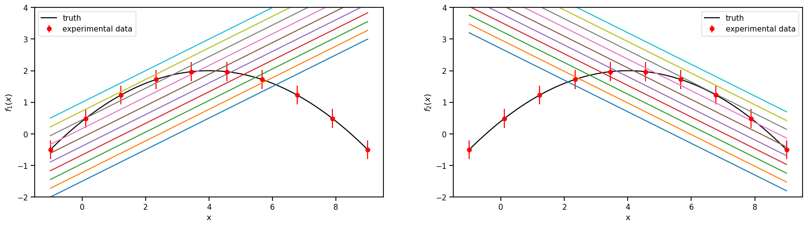
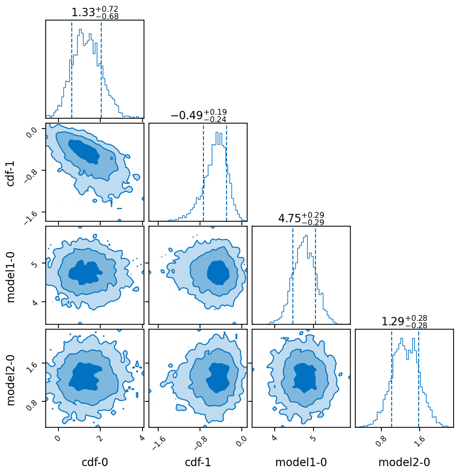
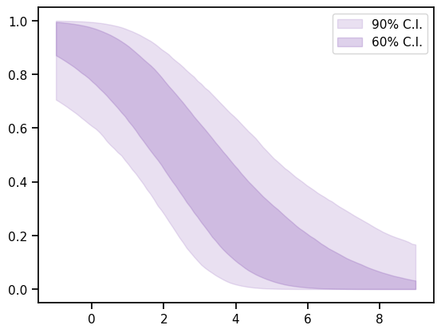
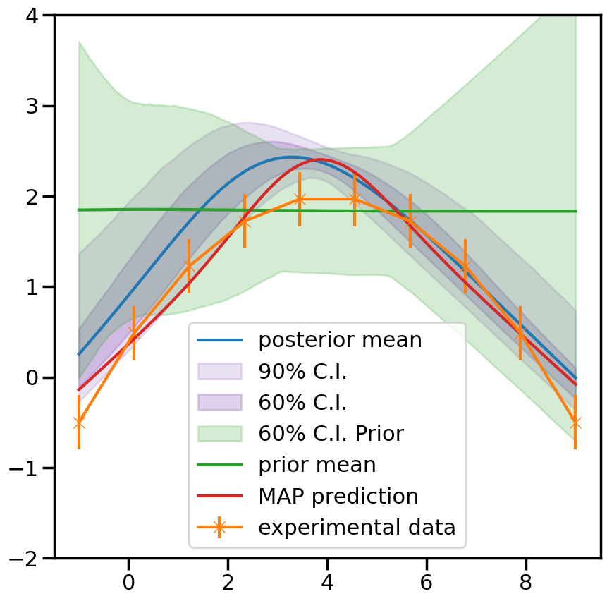

Linear Bivariate BMM with calibration of Coleman toy models.
The best way to learn Taweret is to use it. You can run, modify and experiment with this notebook on GitHub Codespaces.
The models can be found in Coleman Thesis : https://go.exlibris.link/3fVZCfhl
This notebook shows how to use the Bayesian model mixing package Taweret for a toy problem.
Author : Dan Liyanage
Date : 11/13/2022
[1]:
import sys
import os
# You will have to change the following imports depending on where you have
# the packages installed
cwd = os.getcwd()
# Get the first part of this path and append to the sys.path
tw_path = cwd.split("Taweret/")[0] + "Taweret"
sys.path.append(tw_path)
# For plotting
import matplotlib.pyplot as plt
import seaborn as sns
sns.set_context('poster')
# To define priors. (uncoment if not using default priors)
#import bilby
# For other operations
import numpy as np
[2]:
# Import models with a predict method
from Taweret.models import coleman_models as toy_models
m1 = toy_models.coleman_model_1()
m2 = toy_models.coleman_model_2()
truth = toy_models.coleman_truth()
[3]:
g = np.linspace(-1,9,10)
plot_g = np.linspace(-1,9,100)
true_output = truth.evaluate(plot_g)
exp_data = truth.evaluate(g)
1. The models and the experimental data.
Truth
\(f(x) = 2-0.1(x-4)^2\), where \(x \in [-1, 9]\)
Model 1
\(f_1(x,\theta)= 0.5(x+\theta)-2\) , where \(\theta \in [1, 6]\)
Model 2
\(f_2(x,\theta)= -0.5(x-\theta) + 3.7\) , where \(\theta \in [-2, 3]\)
Experimental data
sampled from the Truth with a fixed standard deviation of 0.3
[4]:
sns.set_context('notebook')
fig, axs = plt.subplots(1,2,figsize=(20,5))
prior_ranges = [(1,6), (-2,3)]
for i in range(0,2):
ax = axs.flatten()[i]
ax.plot(plot_g, true_output[0], label='truth', color='black')
ax.errorbar(g,exp_data[0],exp_data[1], fmt='o', label='experimental data', color='r')
ax.legend()
ax.set_ylim(-2,4)
for value in np.linspace(*prior_ranges[i],10):
if i==0:
predict_1 = m1.evaluate(plot_g, value)
ax.plot(plot_g, predict_1[0])
ax.set_ylabel(r'$f_1(x)$')
if i==1:
predict_2 = m2.evaluate(plot_g, value)
ax.plot(plot_g, predict_2[0])
ax.set_ylabel(r'$f_2(x)$')
ax.set_xlabel('x')

2. Choose a Mixing method
[7]:
# Mixing method
from Taweret.mix.bivariate_linear import BivariateLinear as BL
models= {'model1':m1,'model2':m2}
mix_model = BL(models_dic=models, method='cdf', nargs_model_dic={'model1':1, 'model2':1})
cdf mixing function has 2 free parameter(s)
Warning : Default prior is set to {'cdf_0': Uniform(minimum=0, maximum=1, name='cdf_0', latex_label='cdf_0', unit=None, boundary=None), 'cdf_1': Uniform(minimum=0, maximum=1, name='cdf_1', latex_label='cdf_1', unit=None, boundary=None)}
To change the prior use `set_prior` method
Using default priors for model 1
{'model1_0': Uniform(minimum=1, maximum=6, name='model1_0', latex_label='model1_0', unit=None, boundary=None)}
Using default priors for model 2
{'model2_0': Uniform(minimum=-2, maximum=3, name='model2_0', latex_label='model2_0', unit=None, boundary=None)}
[8]:
## uncoment to change the prior from the default
import bilby
priors = bilby.core.prior.PriorDict()
priors['cdf_0'] = bilby.core.prior.Normal(0, 1, name="cdf_0")
priors['cdf_1'] = bilby.core.prior.Normal(0, 1, name="cdf_1")
mix_model.set_prior(priors)
[8]:
{'cdf_0': Normal(mu=0, sigma=1, name='cdf_0', latex_label='cdf_0', unit=None, boundary=None),
'cdf_1': Normal(mu=0, sigma=1, name='cdf_1', latex_label='cdf_1', unit=None, boundary=None),
'model1_0': Uniform(minimum=1, maximum=6, name='model1_0', latex_label='model1_0', unit=None, boundary=None),
'model2_0': Uniform(minimum=-2, maximum=3, name='model2_0', latex_label='model2_0', unit=None, boundary=None)}
[9]:
mix_model.prior
[9]:
{'cdf_0': Normal(mu=0, sigma=1, name='cdf_0', latex_label='cdf_0', unit=None, boundary=None),
'cdf_1': Normal(mu=0, sigma=1, name='cdf_1', latex_label='cdf_1', unit=None, boundary=None),
'model1_0': Uniform(minimum=1, maximum=6, name='model1_0', latex_label='model1_0', unit=None, boundary=None),
'model2_0': Uniform(minimum=-2, maximum=3, name='model2_0', latex_label='model2_0', unit=None, boundary=None)}
3. Train to find posterior
[10]:
kwargs_for_sampler = {'sampler': 'ptemcee',
'ntemps': 5,
'nwalkers': 50,
'Tmax': 100,
'burn_in_fixed_discard': 50,
'nsamples': 2000,
'threads': 6,
'printdt': 60}
result = mix_model.train(x_exp=g, y_exp=exp_data[0], y_err=exp_data[1],
label='cdf_mix',
outdir='outdir/coleman',
kwargs_for_sampler=kwargs_for_sampler,
load_previous=True)
/Users/alexandra/Documents/Taweret/Taweret/mix/bivariate_linear.py:639: UserWarning: 'threads' dectected in 'kwargs_for_sampler' on Darwin. Setting `start_method` to `fork`
warnings.warn("'threads' dectected in 'kwargs_for_sampler'" +
10:03 bilby INFO : Running for label 'cdf_mix', output will be saved to 'outdir/coleman'
Saved results for cdf_mix do not exist in : outdir/coleman
The following settings were provided for sampler
{'sampler': 'ptemcee', 'ntemps': 5, 'nwalkers': 50, 'Tmax': 100, 'burn_in_fixed_discard': 50, 'nsamples': 2000, 'threads': 6, 'printdt': 60}
10:03 bilby INFO : Analysis priors:
10:03 bilby INFO : cdf_0=Normal(mu=0, sigma=1, name='cdf_0', latex_label='cdf_0', unit=None, boundary=None)
10:03 bilby INFO : cdf_1=Normal(mu=0, sigma=1, name='cdf_1', latex_label='cdf_1', unit=None, boundary=None)
10:03 bilby INFO : model1_0=Uniform(minimum=1, maximum=6, name='model1_0', latex_label='model1_0', unit=None, boundary=None)
10:03 bilby INFO : model2_0=Uniform(minimum=-2, maximum=3, name='model2_0', latex_label='model2_0', unit=None, boundary=None)
10:03 bilby INFO : Analysis likelihood class: <class 'Taweret.sampler.likelihood_wrappers.likelihood_wrapper_for_bilby'>
10:03 bilby INFO : Analysis likelihood noise evidence: nan
10:03 bilby INFO : Single likelihood evaluation took 1.116e-04 s
10:03 bilby WARNING : Supplied argument 'printdt' not an argument of 'Ptemcee', removing.
10:03 bilby INFO : Using sampler Ptemcee with kwargs {'ntemps': 5, 'nwalkers': 50, 'Tmax': 100, 'betas': None, 'a': 2.0, 'adaptation_lag': 10000, 'adaptation_time': 100, 'random': None, 'adapt': False, 'swap_ratios': False}
10:03 bilby INFO : Using convergence inputs: ConvergenceInputs(autocorr_c=5, autocorr_tol=50, autocorr_tau=1, gradient_tau=0.1, gradient_mean_log_posterior=0.1, Q_tol=1.02, safety=1, burn_in_nact=50, burn_in_fixed_discard=50, mean_logl_frac=0.01, thin_by_nact=0.5, nsamples=2000, ignore_keys_for_tau=None, min_tau=1, niterations_per_check=5)
10:03 bilby INFO : Generating pos0 samples
10:03 bilby INFO : Starting to sample
1|0:00:00|nc:1.2e+03|a0:0.00-1.00|swp:0.34-0.72|n:nan<2000|t!nan(+nan,+nan)|q:inf|0.07ms/ev
2|0:00:00|nc:2.5e+03|a0:0.20-0.80|swp:0.25-0.69|n:nan<2000|t!nan(+nan,+nan)|q:inf|0.28ms/ev
3|0:00:00|nc:3.8e+03|a0:0.27-0.73|swp:0.22-0.67|n:nan<2000|t!nan(+nan,+nan)|q:inf|0.19ms/ev
4|0:00:00|nc:5.0e+03|a0:0.35-0.75|swp:0.23-0.66|n:nan<2000|t!nan(+nan,+nan)|q:inf|0.18ms/ev
5|0:00:00|nc:6.2e+03|a0:0.36-0.72|swp:0.23-0.66|n:nan<2000|t!nan(+nan,+nan)|q:inf|0.03ms/ev
6|0:00:00|nc:7.5e+03|a0:0.30-0.70|swp:0.24-0.65|n:nan<2000|t!nan(+nan,+nan)|q:inf|0.03ms/ev
7|0:00:00|nc:8.8e+03|a0:0.34-0.69|swp:0.23-0.65|n:nan<2000|t!nan(+nan,+nan)|q:inf|0.03ms/ev
8|0:00:00|nc:1.0e+04|a0:0.38-0.68|swp:0.23-0.64|n:nan<2000|t!nan(+nan,+nan)|q:inf|0.03ms/ev
9|0:00:00|nc:1.1e+04|a0:0.38-0.71|swp:0.24-0.63|n:nan<2000|t!nan(+nan,+nan)|q:inf|0.03ms/ev
10|0:00:00|nc:1.2e+04|a0:0.38-0.68|swp:0.24-0.63|n:nan<2000|t!nan(+nan,+nan)|q:inf|0.03ms/ev
11|0:00:00|nc:1.4e+04|a0:0.36-0.69|swp:0.24-0.63|n:nan<2000|t!nan(+nan,+nan)|q:inf|0.03ms/ev
12|0:00:01|nc:1.5e+04|a0:0.38-0.68|swp:0.25-0.63|n:nan<2000|t!nan(+nan,+nan)|q:inf|0.03ms/ev
13|0:00:01|nc:1.6e+04|a0:0.40-0.66|swp:0.25-0.63|n:nan<2000|t!nan(+nan,+nan)|q:inf|0.03ms/ev
14|0:00:01|nc:1.8e+04|a0:0.43-0.67|swp:0.26-0.64|n:nan<2000|t!nan(+nan,+nan)|q:inf|0.03ms/ev
15|0:00:01|nc:1.9e+04|a0:0.41-0.68|swp:0.26-0.64|n:nan<2000|t!nan(+nan,+nan)|q:inf|0.02ms/ev
16|0:00:01|nc:2.0e+04|a0:0.44-0.68|swp:0.26-0.64|n:nan<2000|t!nan(+nan,+nan)|q:inf|0.02ms/ev
17|0:00:01|nc:2.1e+04|a0:0.44-0.67|swp:0.26-0.65|n:nan<2000|t!nan(+nan,+nan)|q:inf|0.02ms/ev
18|0:00:01|nc:2.2e+04|a0:0.44-0.69|swp:0.26-0.64|n:nan<2000|t!nan(+nan,+nan)|q:inf|0.03ms/ev
19|0:00:01|nc:2.4e+04|a0:0.45-0.71|swp:0.26-0.64|n:nan<2000|t!nan(+nan,+nan)|q:inf|0.02ms/ev
20|0:00:01|nc:2.5e+04|a0:0.46-0.68|swp:0.26-0.64|n:nan<2000|t!nan(+nan,+nan)|q:inf|0.02ms/ev
21|0:00:01|nc:2.6e+04|a0:0.48-0.69|swp:0.27-0.64|n:nan<2000|t!nan(+nan,+nan)|q:inf|0.02ms/ev
22|0:00:01|nc:2.8e+04|a0:0.48-0.66|swp:0.27-0.64|n:nan<2000|t!nan(+nan,+nan)|q:inf|0.02ms/ev
23|0:00:01|nc:2.9e+04|a0:0.49-0.66|swp:0.27-0.65|n:nan<2000|t!nan(+nan,+nan)|q:inf|0.02ms/ev
24|0:00:01|nc:3.0e+04|a0:0.49-0.65|swp:0.27-0.65|n:nan<2000|t!nan(+nan,+nan)|q:inf|0.02ms/ev
25|0:00:01|nc:3.1e+04|a0:0.47-0.66|swp:0.27-0.65|n:nan<2000|t!nan(+nan,+nan)|q:inf|0.03ms/ev
26|0:00:01|nc:3.2e+04|a0:0.48-0.67|swp:0.27-0.65|n:nan<2000|t!nan(+nan,+nan)|q:inf|0.06ms/ev
27|0:00:01|nc:3.4e+04|a0:0.47-0.66|swp:0.28-0.65|n:nan<2000|t!nan(+nan,+nan)|q:inf|0.06ms/ev
28|0:00:01|nc:3.5e+04|a0:0.48-0.66|swp:0.27-0.65|n:nan<2000|t!nan(+nan,+nan)|q:inf|0.06ms/ev
29|0:00:01|nc:3.6e+04|a0:0.48-0.66|swp:0.27-0.66|n:nan<2000|t!nan(+nan,+nan)|q:inf|0.03ms/ev
30|0:00:01|nc:3.8e+04|a0:0.49-0.66|swp:0.27-0.66|n:nan<2000|t!nan(+nan,+nan)|q:inf|0.03ms/ev
31|0:00:01|nc:3.9e+04|a0:0.48-0.66|swp:0.27-0.66|n:nan<2000|t!nan(+nan,+nan)|q:inf|0.03ms/ev
32|0:00:01|nc:4.0e+04|a0:0.49-0.66|swp:0.27-0.66|n:nan<2000|t!nan(+nan,+nan)|q:inf|0.03ms/ev
33|0:00:01|nc:4.1e+04|a0:0.49-0.66|swp:0.27-0.66|n:nan<2000|t!nan(+nan,+nan)|q:inf|0.03ms/ev
34|0:00:01|nc:4.2e+04|a0:0.49-0.66|swp:0.27-0.66|n:nan<2000|t!nan(+nan,+nan)|q:inf|0.03ms/ev
35|0:00:01|nc:4.4e+04|a0:0.49-0.66|swp:0.27-0.66|n:nan<2000|t!nan(+nan,+nan)|q:inf|0.03ms/ev
36|0:00:01|nc:4.5e+04|a0:0.49-0.66|swp:0.27-0.66|n:nan<2000|t!nan(+nan,+nan)|q:inf|0.03ms/ev
37|0:00:01|nc:4.6e+04|a0:0.49-0.65|swp:0.27-0.66|n:nan<2000|t!nan(+nan,+nan)|q:inf|0.03ms/ev
38|0:00:01|nc:4.8e+04|a0:0.49-0.66|swp:0.27-0.67|n:nan<2000|t!nan(+nan,+nan)|q:inf|0.02ms/ev
39|0:00:02|nc:4.9e+04|a0:0.49-0.66|swp:0.28-0.66|n:nan<2000|t!nan(+nan,+nan)|q:inf|0.02ms/ev
40|0:00:02|nc:5.0e+04|a0:0.50-0.67|swp:0.28-0.66|n:nan<2000|t!nan(+nan,+nan)|q:inf|0.02ms/ev
41|0:00:02|nc:5.1e+04|a0:0.50-0.66|swp:0.28-0.66|n:nan<2000|t!nan(+nan,+nan)|q:inf|0.03ms/ev
42|0:00:02|nc:5.2e+04|a0:0.50-0.66|swp:0.28-0.66|n:nan<2000|t!nan(+nan,+nan)|q:inf|0.03ms/ev
43|0:00:02|nc:5.4e+04|a0:0.50-0.66|swp:0.28-0.66|n:nan<2000|t!nan(+nan,+nan)|q:inf|0.03ms/ev
44|0:00:02|nc:5.5e+04|a0:0.50-0.65|swp:0.28-0.66|n:nan<2000|t!nan(+nan,+nan)|q:inf|0.03ms/ev
45|0:00:02|nc:5.6e+04|a0:0.50-0.66|swp:0.28-0.66|n:nan<2000|t!nan(+nan,+nan)|q:inf|0.03ms/ev
46|0:00:02|nc:5.8e+04|a0:0.50-0.64|swp:0.27-0.66|n:nan<2000|t!nan(+nan,+nan)|q:inf|0.03ms/ev
47|0:00:02|nc:5.9e+04|a0:0.51-0.65|swp:0.27-0.66|n:nan<2000|t!nan(+nan,+nan)|q:inf|0.03ms/ev
48|0:00:02|nc:6.0e+04|a0:0.52-0.65|swp:0.28-0.66|n:nan<2000|t!nan(+nan,+nan)|q:inf|0.03ms/ev
49|0:00:02|nc:6.1e+04|a0:0.51-0.66|swp:0.27-0.66|n:nan<2000|t!nan(+nan,+nan)|q:inf|0.03ms/ev
50|0:00:02|nc:6.2e+04|a0:0.51-0.66|swp:0.27-0.66|n:nan<2000|t!nan(+nan,+nan)|q:inf|0.03ms/ev
51|0:00:02|nc:6.4e+04|a0:0.51-0.65|swp:0.27-0.66|n:nan<2000|t!nan(+nan,+nan)|q:inf|0.03ms/ev
52|0:00:02|nc:6.5e+04|a0:0.52-0.64|swp:0.27-0.66|n:nan<2000|t!nan(+nan,+nan)|q:inf|0.03ms/ev
53|0:00:02|nc:6.6e+04|a0:0.52-0.64|swp:0.27-0.66|n:nan<2000|t!nan(+nan,+nan)|q:inf|0.03ms/ev
54|0:00:02|nc:6.8e+04|a0:0.52-0.64|swp:0.28-0.66|n:nan<2000|t!nan(+nan,+nan)|q:inf|0.03ms/ev
55|0:00:02|nc:6.9e+04|a0:0.53-0.64|swp:0.28-0.67|n:nan<2000|t!nan(+nan,+nan)|q:inf|0.03ms/ev
56|0:00:02|nc:7.0e+04|a0:0.54-0.64|swp:0.28-0.67|n:nan<2000|t!nan(+nan,+nan)|q:inf|0.03ms/ev
57|0:00:02|nc:7.1e+04|a0:0.53-0.63|swp:0.27-0.67|n:nan<2000|t!nan(+nan,+nan)|q:inf|0.02ms/ev
58|0:00:02|nc:7.2e+04|a0:0.53-0.63|swp:0.27-0.67|n:nan<2000|t!nan(+nan,+nan)|q:inf|0.02ms/ev
59|0:00:02|nc:7.4e+04|a0:0.53-0.63|swp:0.27-0.67|n:nan<2000|t!nan(+nan,+nan)|q:inf|0.02ms/ev
60|0:00:02|nc:7.5e+04|a0:0.53-0.63|swp:0.27-0.67|n:nan<2000|t!nan(+nan,+nan)|q:inf|0.02ms/ev
61|0:00:02|nc:7.6e+04|a0:0.53-0.63|swp:0.27-0.67|n:nan<2000|t!nan(+nan,+nan)|q:inf|0.03ms/ev
62|0:00:02|nc:7.8e+04|a0:0.53-0.64|swp:0.27-0.67|n:nan<2000|t!nan(+nan,+nan)|q:inf|0.03ms/ev
63|0:00:02|nc:7.9e+04|a0:0.53-0.64|swp:0.27-0.67|n:nan<2000|t!nan(+nan,+nan)|q:inf|0.03ms/ev
64|0:00:02|nc:8.0e+04|a0:0.53-0.64|swp:0.27-0.67|n:nan<2000|t!nan(+nan,+nan)|q:inf|0.03ms/ev
65|0:00:02|nc:8.1e+04|a0:0.53-0.65|swp:0.27-0.67|n:nan<2000|t!nan(+nan,+nan)|q:inf|0.03ms/ev
66|0:00:02|nc:8.2e+04|a0:0.52-0.65|swp:0.27-0.67|n:nan<2000|t!nan(+nan,+nan)|q:inf|0.03ms/ev
67|0:00:02|nc:8.4e+04|a0:0.53-0.65|swp:0.27-0.67|n:nan<2000|t!nan(+nan,+nan)|q:inf|0.02ms/ev
68|0:00:02|nc:8.5e+04|a0:0.53-0.64|swp:0.27-0.67|n:nan<2000|t!nan(+nan,+nan)|q:inf|0.02ms/ev
69|0:00:02|nc:8.6e+04|a0:0.53-0.64|swp:0.27-0.67|n:nan<2000|t!nan(+nan,+nan)|q:inf|0.02ms/ev
70|0:00:02|nc:8.8e+04|a0:0.53-0.65|swp:0.27-0.67|n:nan<2000|t!nan(+nan,+nan)|q:inf|0.03ms/ev
71|0:00:03|nc:8.9e+04|a0:0.53-0.65|swp:0.28-0.67|n:nan<2000|t!nan(+nan,+nan)|q:inf|0.03ms/ev
72|0:00:03|nc:9.0e+04|a0:0.53-0.65|swp:0.27-0.67|n:nan<2000|t!nan(+nan,+nan)|q:inf|0.02ms/ev
73|0:00:03|nc:9.1e+04|a0:0.53-0.65|swp:0.27-0.67|n:nan<2000|t!nan(+nan,+nan)|q:inf|0.02ms/ev
74|0:00:03|nc:9.2e+04|a0:0.53-0.65|swp:0.27-0.67|n:nan<2000|t!nan(+nan,+nan)|q:inf|0.03ms/ev
75|0:00:03|nc:9.4e+04|a0:0.53-0.65|swp:0.27-0.67|n:nan<2000|t!nan(+nan,+nan)|q:inf|0.03ms/ev
76|0:00:03|nc:9.5e+04|a0:0.54-0.65|swp:0.27-0.67|n:nan<2000|t!nan(+nan,+nan)|q:inf|0.03ms/ev
77|0:00:03|nc:9.6e+04|a0:0.54-0.65|swp:0.27-0.67|n:nan<2000|t!nan(+nan,+nan)|q:inf|0.03ms/ev
78|0:00:03|nc:9.8e+04|a0:0.54-0.65|swp:0.27-0.67|n:nan<2000|t!nan(+nan,+nan)|q:inf|0.03ms/ev
79|0:00:03|nc:9.9e+04|a0:0.53-0.65|swp:0.27-0.67|n:nan<2000|t!nan(+nan,+nan)|q:inf|0.03ms/ev
80|0:00:03|nc:1.0e+05|a0:0.54-0.65|swp:0.27-0.67|n:nan<2000|t!nan(+nan,+nan)|q:inf|0.03ms/ev
81|0:00:03|nc:1.0e+05|a0:0.53-0.65|swp:0.27-0.67|n:nan<2000|t!nan(+nan,+nan)|q:inf|0.03ms/ev
82|0:00:03|nc:1.0e+05|a0:0.53-0.65|swp:0.27-0.67|n:nan<2000|t!nan(+nan,+nan)|q:inf|0.03ms/ev
83|0:00:03|nc:1.0e+05|a0:0.54-0.65|swp:0.27-0.67|n:nan<2000|t!nan(+nan,+nan)|q:inf|0.02ms/ev
84|0:00:03|nc:1.0e+05|a0:0.54-0.65|swp:0.27-0.67|n:nan<2000|t!nan(+nan,+nan)|q:inf|0.02ms/ev
85|0:00:03|nc:1.1e+05|a0:0.54-0.65|swp:0.27-0.67|n:nan<2000|t!nan(+nan,+nan)|q:inf|0.02ms/ev
86|0:00:03|nc:1.1e+05|a0:0.54-0.65|swp:0.27-0.67|n:nan<2000|t!nan(+nan,+nan)|q:inf|0.02ms/ev
87|0:00:03|nc:1.1e+05|a0:0.54-0.65|swp:0.27-0.67|n:nan<2000|t!nan(+nan,+nan)|q:inf|0.02ms/ev
88|0:00:03|nc:1.1e+05|a0:0.54-0.65|swp:0.27-0.67|n:nan<2000|t!nan(+nan,+nan)|q:inf|0.02ms/ev
89|0:00:03|nc:1.1e+05|a0:0.54-0.64|swp:0.27-0.67|n:nan<2000|t!nan(+nan,+nan)|q:inf|0.02ms/ev
90|0:00:03|nc:1.1e+05|a0:0.54-0.65|swp:0.27-0.67|n:nan<2000|t!nan(+nan,+nan)|q:inf|0.03ms/ev
91|0:00:03|nc:1.1e+05|a0:0.55-0.65|swp:0.27-0.67|n:nan<2000|t!nan(+nan,+nan)|q:inf|0.02ms/ev
92|0:00:03|nc:1.2e+05|a0:0.54-0.65|swp:0.27-0.67|n:nan<2000|t!nan(+nan,+nan)|q:inf|0.02ms/ev
93|0:00:03|nc:1.2e+05|a0:0.54-0.65|swp:0.27-0.67|n:nan<2000|t!nan(+nan,+nan)|q:inf|0.02ms/ev
94|0:00:03|nc:1.2e+05|a0:0.54-0.65|swp:0.27-0.67|n:nan<2000|t!nan(+nan,+nan)|q:inf|0.02ms/ev
95|0:00:03|nc:1.2e+05|a0:0.54-0.65|swp:0.27-0.67|n:nan<2000|t!nan(+nan,+nan)|q:inf|0.02ms/ev
96|0:00:03|nc:1.2e+05|a0:0.54-0.65|swp:0.27-0.67|n:nan<2000|t!nan(+nan,+nan)|q:inf|0.02ms/ev
97|0:00:03|nc:1.2e+05|a0:0.54-0.64|swp:0.27-0.67|n:nan<2000|t!nan(+nan,+nan)|q:inf|0.02ms/ev
98|0:00:03|nc:1.2e+05|a0:0.54-0.64|swp:0.27-0.67|n:nan<2000|t!nan(+nan,+nan)|q:inf|0.02ms/ev
99|0:00:03|nc:1.2e+05|a0:0.54-0.64|swp:0.27-0.67|n:nan<2000|t!nan(+nan,+nan)|q:inf|0.02ms/ev
100|0:00:03|nc:1.2e+05|a0:0.54-0.64|swp:0.27-0.67|n:nan<2000|t!nan(+nan,+nan)|q:inf|0.02ms/ev
101|0:00:03|nc:1.3e+05|a0:0.54-0.64|swp:0.27-0.67|n:nan<2000|t!nan(+nan,+nan)|q:inf|0.02ms/ev
102|0:00:03|nc:1.3e+05|a0:0.54-0.64|swp:0.27-0.67|n:nan<2000|t!nan(+nan,+nan)|q:inf|0.02ms/ev
103|0:00:04|nc:1.3e+05|a0:0.54-0.63|swp:0.27-0.67|n:nan<2000|t!nan(+nan,+nan)|q:inf|0.02ms/ev
104|0:00:04|nc:1.3e+05|a0:0.54-0.63|swp:0.27-0.67|n:nan<2000|t!nan(+nan,+nan)|q:inf|0.02ms/ev
105|0:00:04|nc:1.3e+05|a0:0.54-0.63|swp:0.27-0.67|n:nan<2000|t!nan(+nan,+nan)|q:inf|0.02ms/ev
106|0:00:04|nc:1.3e+05|a0:0.54-0.63|swp:0.27-0.67|n:nan<2000|t!nan(+nan,+nan)|q:inf|0.02ms/ev
107|0:00:04|nc:1.3e+05|a0:0.54-0.63|swp:0.27-0.67|n:nan<2000|t!nan(+nan,+nan)|q:inf|0.02ms/ev
108|0:00:04|nc:1.4e+05|a0:0.54-0.63|swp:0.27-0.67|n:nan<2000|t!nan(+nan,+nan)|q:inf|0.02ms/ev
109|0:00:04|nc:1.4e+05|a0:0.54-0.63|swp:0.27-0.67|n:nan<2000|t!nan(+nan,+nan)|q:inf|0.02ms/ev
110|0:00:04|nc:1.4e+05|a0:0.54-0.63|swp:0.27-0.67|n:nan<2000|t!nan(+nan,+nan)|q:inf|0.02ms/ev
111|0:00:04|nc:1.4e+05|a0:0.54-0.62|swp:0.27-0.67|n:nan<2000|t!nan(+nan,+nan)|q:inf|0.02ms/ev
112|0:00:04|nc:1.4e+05|a0:0.54-0.62|swp:0.27-0.67|n:nan<2000|t!nan(+nan,+nan)|q:inf|0.02ms/ev
113|0:00:04|nc:1.4e+05|a0:0.54-0.62|swp:0.27-0.67|n:nan<2000|t!nan(+nan,+nan)|q:inf|0.02ms/ev
114|0:00:04|nc:1.4e+05|a0:0.54-0.62|swp:0.27-0.67|n:nan<2000|t!nan(+nan,+nan)|q:inf|0.02ms/ev
115|0:00:04|nc:1.4e+05|a0:0.54-0.62|swp:0.27-0.67|n:nan<2000|t!nan(+nan,+nan)|q:inf|0.02ms/ev
116|0:00:04|nc:1.4e+05|a0:0.54-0.62|swp:0.27-0.67|n:nan<2000|t!nan(+nan,+nan)|q:inf|0.02ms/ev
117|0:00:04|nc:1.5e+05|a0:0.54-0.62|swp:0.27-0.67|n:nan<2000|t!nan(+nan,+nan)|q:inf|0.02ms/ev
118|0:00:04|nc:1.5e+05|a0:0.54-0.62|swp:0.27-0.67|n:nan<2000|t!nan(+nan,+nan)|q:inf|0.02ms/ev
119|0:00:04|nc:1.5e+05|a0:0.54-0.62|swp:0.27-0.67|n:nan<2000|t!nan(+nan,+nan)|q:inf|0.02ms/ev
120|0:00:04|nc:1.5e+05|a0:0.54-0.62|swp:0.27-0.67|n:nan<2000|t!nan(+nan,+nan)|q:inf|0.02ms/ev
121|0:00:04|nc:1.5e+05|a0:0.54-0.62|swp:0.27-0.67|n:nan<2000|t!nan(+nan,+nan)|q:inf|0.03ms/ev
122|0:00:04|nc:1.5e+05|a0:0.54-0.62|swp:0.27-0.67|n:nan<2000|t!nan(+nan,+nan)|q:inf|0.03ms/ev
123|0:00:04|nc:1.5e+05|a0:0.54-0.62|swp:0.27-0.67|n:nan<2000|t!nan(+nan,+nan)|q:inf|0.03ms/ev
124|0:00:04|nc:1.6e+05|a0:0.54-0.62|swp:0.27-0.67|n:nan<2000|t!nan(+nan,+nan)|q:inf|0.03ms/ev
125|0:00:04|nc:1.6e+05|a0:0.54-0.62|swp:0.27-0.67|n:nan<2000|t!nan(+nan,+nan)|q:inf|0.03ms/ev
126|0:00:04|nc:1.6e+05|a0:0.54-0.63|swp:0.27-0.67|n:nan<2000|t!nan(+nan,+nan)|q:inf|0.02ms/ev
127|0:00:04|nc:1.6e+05|a0:0.54-0.62|swp:0.27-0.67|n:nan<2000|t!nan(+nan,+nan)|q:inf|0.02ms/ev
128|0:00:04|nc:1.6e+05|a0:0.54-0.62|swp:0.27-0.67|n:nan<2000|t!nan(+nan,+nan)|q:inf|0.02ms/ev
129|0:00:04|nc:1.6e+05|a0:0.54-0.62|swp:0.27-0.67|n:nan<2000|t!nan(+nan,+nan)|q:inf|0.02ms/ev
130|0:00:04|nc:1.6e+05|a0:0.54-0.62|swp:0.27-0.67|n:nan<2000|t!nan(+nan,+nan)|q:inf|0.02ms/ev
131|0:00:04|nc:1.6e+05|a0:0.54-0.62|swp:0.27-0.67|n:-2450<2000|t!2(+nan,+0.20)|q:1.01|0.02ms/ev
132|0:00:05|nc:1.6e+05|a0:0.54-0.62|swp:0.27-0.67|n:-2400<2000|t!2(+nan,+0.25)|q:1.01|0.07ms/ev
133|0:00:05|nc:1.7e+05|a0:0.54-0.62|swp:0.27-0.67|n:-2350<2000|t!2(+nan,+0.39)|q:1.01|0.08ms/ev
134|0:00:05|nc:1.7e+05|a0:0.54-0.62|swp:0.27-0.67|n:-2300<2000|t!2(+nan,+0.54)|q:1.01|0.08ms/ev
135|0:00:05|nc:1.7e+05|a0:0.54-0.62|swp:0.27-0.67|n:-2250<2000|t!2(+nan,+0.37)|q:1.01|0.03ms/ev
136|0:00:05|nc:1.7e+05|a0:0.54-0.62|swp:0.27-0.67|n:-2200<2000|t!2(+nan,+0.19)|q:1.01|0.03ms/ev
137|0:00:05|nc:1.7e+05|a0:0.54-0.62|swp:0.27-0.67|n:-2150<2000|t!2(+nan,+0.49)|q:1.01|0.03ms/ev
138|0:00:05|nc:1.7e+05|a0:0.54-0.62|swp:0.27-0.67|n:-2100<2000|t!2(+nan,+0.28)|q:1.01|0.03ms/ev
139|0:00:05|nc:1.7e+05|a0:0.54-0.62|swp:0.27-0.67|n:-2050<2000|t!2(+nan,+0.29)|q:1.01|0.03ms/ev
140|0:00:05|nc:1.8e+05|a0:0.54-0.62|swp:0.27-0.67|n:-2000<2000|t!2(+0.07,+0.46)|q:1.01|0.03ms/ev
141|0:00:05|nc:1.8e+05|a0:0.54-0.62|swp:0.27-0.67|n:-1950<2000|t!2(+0.07,+0.26)|q:1.01|0.03ms/ev
142|0:00:05|nc:1.8e+05|a0:0.54-0.62|swp:0.27-0.67|n:-1900<2000|t!2(+0.06,+0.56)|q:1.01|0.03ms/ev
143|0:00:05|nc:1.8e+05|a0:0.54-0.62|swp:0.27-0.67|n:-1850<2000|t!2(+0.05,+0.24)|q:1.01|0.03ms/ev
144|0:00:05|nc:1.8e+05|a0:0.54-0.62|swp:0.27-0.67|n:-1800<2000|t!2(+0.04,+0.33)|q:1.01|0.03ms/ev
145|0:00:05|nc:1.8e+05|a0:0.54-0.63|swp:0.27-0.67|n:-1750<2000|t!2(+0.05,+0.46)|q:1.01|0.03ms/ev
146|0:00:05|nc:1.8e+05|a0:0.54-0.63|swp:0.27-0.67|n:-1700<2000|t!2(+0.04,+0.19)|q:1.01|0.03ms/ev
147|0:00:05|nc:1.8e+05|a0:0.54-0.62|swp:0.27-0.67|n:-1650<2000|t!2(+0.05,+0.41)|q:1.01|0.03ms/ev
148|0:00:05|nc:1.8e+05|a0:0.54-0.62|swp:0.27-0.67|n:-1600<2000|t!2(+0.06,+0.26)|q:1.01|0.03ms/ev
149|0:00:05|nc:1.9e+05|a0:0.54-0.63|swp:0.27-0.67|n:-1550<2000|t!2(+0.03,+0.39)|q:1.01|0.03ms/ev
150|0:00:05|nc:1.9e+05|a0:0.54-0.63|swp:0.27-0.67|n:-1500<2000|t!2(+0.04,+0.31)|q:1.01|0.03ms/ev
151|0:00:05|nc:1.9e+05|a0:0.54-0.63|swp:0.27-0.67|n:-1450<2000|t!2(+0.04,+0.30)|q:1.01|0.03ms/ev
152|0:00:05|nc:1.9e+05|a0:0.54-0.62|swp:0.27-0.67|n:-1400<2000|t!2(+0.07,+0.35)|q:1.01|0.03ms/ev
153|0:00:05|nc:1.9e+05|a0:0.54-0.63|swp:0.27-0.67|n:-1350<2000|t!2(+0.03,+0.28)|q:1.01|0.03ms/ev
154|0:00:05|nc:1.9e+05|a0:0.54-0.63|swp:0.27-0.67|n:-1300<2000|t!2(+0.07,+0.27)|q:1.01|0.03ms/ev
155|0:00:05|nc:1.9e+05|a0:0.54-0.63|swp:0.27-0.67|n:-1250<2000|t!2(+0.06,+0.12)|q:1.01|0.03ms/ev
156|0:00:05|nc:2.0e+05|a0:0.54-0.63|swp:0.27-0.67|n:-1200<2000|t!2(+0.04,+0.35)|q:1.01|0.03ms/ev
157|0:00:06|nc:2.0e+05|a0:0.54-0.62|swp:0.27-0.67|n:-1150<2000|t!2(+0.03,+0.12)|q:1.01|0.03ms/ev
158|0:00:06|nc:2.0e+05|a0:0.54-0.63|swp:0.27-0.67|n:-1100<2000|t!2(+0.04,+0.49)|q:1.01|0.03ms/ev
159|0:00:06|nc:2.0e+05|a0:0.54-0.63|swp:0.27-0.67|n:-1050<2000|t!2(+0.03,+0.32)|q:1.01|0.03ms/ev
160|0:00:06|nc:2.0e+05|a0:0.54-0.62|swp:0.27-0.67|n:-1000<2000|t!2(+0.03,+0.36)|q:1.01|0.03ms/ev
161|0:00:06|nc:2.0e+05|a0:0.54-0.62|swp:0.27-0.67|n:-950<2000|t!2(+0.06,+0.26)|q:1.01|0.03ms/ev
162|0:00:06|nc:2.0e+05|a0:0.54-0.62|swp:0.27-0.67|n:-900<2000|t!2(+0.05,+0.10)|q:1.01|0.03ms/ev
163|0:00:06|nc:2.0e+05|a0:0.54-0.63|swp:0.27-0.67|n:-850<2000|t!2(+0.05,+0.40)|q:1.01|0.03ms/ev
164|0:00:06|nc:2.0e+05|a0:0.54-0.62|swp:0.27-0.67|n:-800<2000|t!2(+0.03,+0.34)|q:1.01|0.03ms/ev
165|0:00:06|nc:2.1e+05|a0:0.54-0.62|swp:0.27-0.67|n:-750<2000|t!2(+0.02,+0.52)|q:1.01|0.03ms/ev
166|0:00:06|nc:2.1e+05|a0:0.54-0.62|swp:0.27-0.67|n:-700<2000|t!2(+0.03,+0.37)|q:1.01|0.03ms/ev
167|0:00:06|nc:2.1e+05|a0:0.54-0.62|swp:0.27-0.67|n:-650<2000|t!2(+0.04,+0.23)|q:1.01|0.03ms/ev
168|0:00:06|nc:2.1e+05|a0:0.54-0.62|swp:0.27-0.67|n:-600<2000|t!2(+0.04,+0.30)|q:1.01|0.03ms/ev
169|0:00:06|nc:2.1e+05|a0:0.53-0.62|swp:0.27-0.67|n:-550<2000|t!2(+0.04,+0.18)|q:1.01|0.03ms/ev
170|0:00:06|nc:2.1e+05|a0:0.53-0.62|swp:0.27-0.67|n:-500<2000|t!2(+0.03,+0.25)|q:1.01|0.03ms/ev
171|0:00:06|nc:2.1e+05|a0:0.54-0.62|swp:0.27-0.67|n:-450<2000|t!2(+0.05,+0.46)|q:1.01|0.03ms/ev
172|0:00:06|nc:2.2e+05|a0:0.53-0.62|swp:0.27-0.67|n:-400<2000|t!2(+0.03,+0.26)|q:1.01|0.03ms/ev
173|0:00:06|nc:2.2e+05|a0:0.54-0.62|swp:0.27-0.67|n:-350<2000|t!2(+0.03,+0.36)|q:1.01|0.03ms/ev
174|0:00:06|nc:2.2e+05|a0:0.53-0.62|swp:0.27-0.67|n:-300<2000|t!2(+0.03,+0.26)|q:1.01|0.03ms/ev
175|0:00:06|nc:2.2e+05|a0:0.53-0.62|swp:0.27-0.67|n:-250<2000|t!2(+0.05,+0.22)|q:1.01|0.03ms/ev
176|0:00:06|nc:2.2e+05|a0:0.53-0.62|swp:0.27-0.67|n:-200<2000|t!2(+0.04,+0.20)|q:1.01|0.03ms/ev
177|0:00:06|nc:2.2e+05|a0:0.53-0.62|swp:0.27-0.67|n:-150<2000|t!2(+0.02,+0.26)|q:1.01|0.03ms/ev
178|0:00:06|nc:2.2e+05|a0:0.53-0.62|swp:0.27-0.67|n:-100<2000|t!2(+0.03,+0.56)|q:1.01|0.03ms/ev
179|0:00:06|nc:2.2e+05|a0:0.54-0.62|swp:0.27-0.67|n:-50<2000|t!2(+0.03,+0.53)|q:1.01|0.03ms/ev
180|0:00:06|nc:2.2e+05|a0:0.53-0.62|swp:0.27-0.67|n:0<2000|t!2(+0.02,+0.22)|q:1.01|0.03ms/ev
181|0:00:06|nc:2.3e+05|a0:0.53-0.62|swp:0.26-0.67|n:50<2000|t!2(+0.02,+0.33)|q:1.01|0.03ms/ev
182|0:00:06|nc:2.3e+05|a0:0.53-0.62|swp:0.26-0.67|n:100<2000|t!2(+0.03,+0.17)|q:1.01|0.03ms/ev
183|0:00:06|nc:2.3e+05|a0:0.53-0.62|swp:0.26-0.67|n:150<2000|t!2(+0.06,+0.20)|q:1.01|0.03ms/ev
184|0:00:07|nc:2.3e+05|a0:0.54-0.62|swp:0.26-0.67|n:200<2000|t!2(+0.02,+0.38)|q:1.01|0.03ms/ev
185|0:00:07|nc:2.3e+05|a0:0.54-0.62|swp:0.26-0.67|n:250<2000|t!2(+0.02,+0.30)|q:1.01|0.03ms/ev
186|0:00:07|nc:2.3e+05|a0:0.54-0.62|swp:0.26-0.67|n:300<2000|t!2(+0.02,+0.58)|q:1.01|0.03ms/ev
187|0:00:07|nc:2.3e+05|a0:0.54-0.62|swp:0.26-0.67|n:350<2000|t!2(+0.02,+0.14)|q:1.01|0.03ms/ev
188|0:00:07|nc:2.4e+05|a0:0.54-0.62|swp:0.26-0.67|n:400<2000|t!2(+0.03,+0.48)|q:1.01|0.03ms/ev
189|0:00:07|nc:2.4e+05|a0:0.54-0.62|swp:0.26-0.67|n:-1750<2000|t!2(+0.03,+0.37)|q:1.02|0.03ms/ev
190|0:00:07|nc:2.4e+05|a0:0.54-0.62|swp:0.26-0.67|n:-1700<2000|t!2(+0.02,+0.32)|q:1.02|0.03ms/ev
191|0:00:07|nc:2.4e+05|a0:0.54-0.62|swp:0.26-0.67|n:-1650<2000|t!2(+0.02,+0.16)|q:1.02|0.03ms/ev
192|0:00:07|nc:2.4e+05|a0:0.54-0.62|swp:0.26-0.67|n:-1600<2000|t!2(+0.12,+0.18)|q:1.02|0.03ms/ev
193|0:00:07|nc:2.4e+05|a0:0.54-0.62|swp:0.26-0.67|n:-1550<2000|t!2(+0.04,+0.29)|q:1.01|0.03ms/ev
194|0:00:07|nc:2.4e+05|a0:0.55-0.62|swp:0.27-0.67|n:-1500<2000|t!2(+0.11,+0.19)|q:1.01|0.03ms/ev
195|0:00:07|nc:2.4e+05|a0:0.55-0.62|swp:0.26-0.67|n:-1450<2000|t!2(+0.04,+0.36)|q:1.01|0.03ms/ev
196|0:00:07|nc:2.4e+05|a0:0.55-0.62|swp:0.27-0.67|n:-1400<2000|t!2(+0.05,+0.40)|q:1.01|0.03ms/ev
197|0:00:07|nc:2.5e+05|a0:0.55-0.62|swp:0.27-0.67|n:-1350<2000|t!2(+0.04,+0.27)|q:1.01|0.03ms/ev
198|0:00:07|nc:2.5e+05|a0:0.55-0.62|swp:0.26-0.67|n:-1300<2000|t!2(+0.03,+0.25)|q:1.01|0.03ms/ev
199|0:00:07|nc:2.5e+05|a0:0.55-0.62|swp:0.26-0.67|n:-1250<2000|t!2(+0.03,+0.20)|q:1.01|0.03ms/ev
200|0:00:07|nc:2.5e+05|a0:0.55-0.62|swp:0.26-0.67|n:-1200<2000|t!2(+0.03,+0.23)|q:1.01|0.03ms/ev
201|0:00:07|nc:2.5e+05|a0:0.55-0.62|swp:0.26-0.67|n:-1150<2000|t!2(+0.03,+0.23)|q:1.01|0.03ms/ev
202|0:00:07|nc:2.5e+05|a0:0.55-0.62|swp:0.26-0.67|n:-1100<2000|t!2(+0.04,+0.36)|q:1.01|0.03ms/ev
203|0:00:07|nc:2.5e+05|a0:0.55-0.62|swp:0.26-0.67|n:-1050<2000|t!2(+0.04,+0.29)|q:1.01|0.03ms/ev
204|0:00:07|nc:2.6e+05|a0:0.55-0.62|swp:0.26-0.67|n:-1000<2000|t!2(+0.06,+0.40)|q:1.01|0.03ms/ev
205|0:00:07|nc:2.6e+05|a0:0.55-0.62|swp:0.26-0.67|n:-950<2000|t!2(+0.04,+0.40)|q:1.01|0.03ms/ev
206|0:00:07|nc:2.6e+05|a0:0.55-0.62|swp:0.26-0.67|n:-900<2000|t!2(+0.04,+0.29)|q:1.01|0.03ms/ev
207|0:00:07|nc:2.6e+05|a0:0.55-0.62|swp:0.27-0.67|n:-850<2000|t!2(+0.04,+0.19)|q:1.01|0.03ms/ev
208|0:00:07|nc:2.6e+05|a0:0.55-0.62|swp:0.27-0.67|n:-800<2000|t!2(+0.05,+0.27)|q:1.01|0.03ms/ev
209|0:00:07|nc:2.6e+05|a0:0.55-0.62|swp:0.27-0.67|n:-750<2000|t!2(+0.03,+0.39)|q:1.01|0.03ms/ev
210|0:00:07|nc:2.6e+05|a0:0.55-0.62|swp:0.27-0.67|n:-700<2000|t!2(+0.03,+0.18)|q:1.01|0.03ms/ev
211|0:00:08|nc:2.6e+05|a0:0.55-0.62|swp:0.27-0.67|n:-650<2000|t!2(+0.03,+0.28)|q:1.01|0.03ms/ev
212|0:00:08|nc:2.6e+05|a0:0.55-0.62|swp:0.27-0.67|n:-600<2000|t!2(+0.03,+0.32)|q:1.01|0.03ms/ev
213|0:00:08|nc:2.7e+05|a0:0.55-0.62|swp:0.27-0.67|n:-550<2000|t!2(+0.03,+0.36)|q:1.01|0.03ms/ev
214|0:00:08|nc:2.7e+05|a0:0.55-0.62|swp:0.27-0.67|n:-500<2000|t!2(+0.04,+0.18)|q:1.01|0.03ms/ev
215|0:00:08|nc:2.7e+05|a0:0.55-0.62|swp:0.27-0.67|n:-450<2000|t!2(+0.06,+0.26)|q:1.01|0.03ms/ev
216|0:00:08|nc:2.7e+05|a0:0.55-0.62|swp:0.27-0.67|n:-400<2000|t!2(+0.05,+0.30)|q:1.01|0.03ms/ev
217|0:00:08|nc:2.7e+05|a0:0.55-0.62|swp:0.27-0.67|n:-350<2000|t!2(+0.02,+0.20)|q:1.01|0.03ms/ev
218|0:00:08|nc:2.7e+05|a0:0.54-0.62|swp:0.27-0.67|n:-300<2000|t!2(+0.02,+0.14)|q:1.01|0.03ms/ev
219|0:00:08|nc:2.7e+05|a0:0.55-0.62|swp:0.27-0.67|n:-250<2000|t!2(+0.02,+0.21)|q:1.01|0.03ms/ev
220|0:00:08|nc:2.8e+05|a0:0.55-0.62|swp:0.27-0.67|n:-200<2000|t!2(+0.03,+0.20)|q:1.01|0.03ms/ev
221|0:00:08|nc:2.8e+05|a0:0.55-0.62|swp:0.27-0.67|n:-150<2000|t!2(+0.02,+0.14)|q:1.01|0.03ms/ev
222|0:00:08|nc:2.8e+05|a0:0.55-0.62|swp:0.27-0.67|n:-100<2000|t!2(+0.02,+0.27)|q:1.01|0.03ms/ev
223|0:00:08|nc:2.8e+05|a0:0.55-0.62|swp:0.27-0.67|n:-50<2000|t!2(+0.02,+0.36)|q:1.01|0.03ms/ev
224|0:00:08|nc:2.8e+05|a0:0.55-0.62|swp:0.27-0.67|n:0<2000|t=2(+0.03,+0.08)|q:1.01|0.03ms/ev
225|0:00:08|nc:2.8e+05|a0:0.55-0.62|swp:0.27-0.67|n:50<2000|t!2(+0.02,+0.33)|q:1.01|0.03ms/ev
226|0:00:08|nc:2.8e+05|a0:0.55-0.62|swp:0.27-0.67|n:100<2000|t!2(+0.02,+0.23)|q:1.01|0.03ms/ev
227|0:00:08|nc:2.8e+05|a0:0.55-0.62|swp:0.27-0.67|n:150<2000|t!2(+0.03,+0.24)|q:1.01|0.03ms/ev
228|0:00:08|nc:2.8e+05|a0:0.55-0.62|swp:0.27-0.67|n:200<2000|t!2(+0.02,+0.42)|q:1.01|0.03ms/ev
229|0:00:08|nc:2.9e+05|a0:0.55-0.62|swp:0.27-0.67|n:250<2000|t!2(+0.03,+0.15)|q:1.01|0.03ms/ev
230|0:00:08|nc:2.9e+05|a0:0.55-0.61|swp:0.27-0.67|n:300<2000|t!2(+0.02,+0.26)|q:1.01|0.03ms/ev
231|0:00:08|nc:2.9e+05|a0:0.55-0.62|swp:0.27-0.67|n:350<2000|t!2(+0.01,+0.17)|q:1.01|0.03ms/ev
232|0:00:08|nc:2.9e+05|a0:0.55-0.62|swp:0.27-0.67|n:400<2000|t!2(+0.03,+0.33)|q:1.01|0.03ms/ev
233|0:00:08|nc:2.9e+05|a0:0.55-0.61|swp:0.27-0.67|n:450<2000|t!2(+0.02,+0.15)|q:1.01|0.03ms/ev
234|0:00:08|nc:2.9e+05|a0:0.55-0.61|swp:0.27-0.67|n:500<2000|t!2(+0.03,+0.15)|q:1.01|0.03ms/ev
235|0:00:08|nc:2.9e+05|a0:0.55-0.61|swp:0.27-0.67|n:550<2000|t!2(+0.03,+0.62)|q:1.01|0.03ms/ev
236|0:00:08|nc:3.0e+05|a0:0.55-0.61|swp:0.27-0.67|n:600<2000|t!2(+0.02,+0.19)|q:1.01|0.03ms/ev
237|0:00:08|nc:3.0e+05|a0:0.55-0.61|swp:0.27-0.67|n:650<2000|t!2(+0.02,+0.40)|q:1.01|0.03ms/ev
238|0:00:09|nc:3.0e+05|a0:0.55-0.61|swp:0.27-0.67|n:700<2000|t!2(+0.02,+0.36)|q:1.01|0.03ms/ev
239|0:00:09|nc:3.0e+05|a0:0.55-0.61|swp:0.27-0.67|n:750<2000|t!2(+0.02,+0.32)|q:1.01|0.03ms/ev
240|0:00:09|nc:3.0e+05|a0:0.55-0.61|swp:0.27-0.67|n:800<2000|t!2(+0.02,+0.31)|q:1.01|0.03ms/ev
241|0:00:09|nc:3.0e+05|a0:0.55-0.61|swp:0.27-0.67|n:850<2000|t!2(+0.01,+0.33)|q:1.01|0.03ms/ev
242|0:00:09|nc:3.0e+05|a0:0.55-0.61|swp:0.27-0.67|n:900<2000|t!2(+0.03,+0.37)|q:1.01|0.03ms/ev
243|0:00:09|nc:3.0e+05|a0:0.55-0.61|swp:0.27-0.67|n:950<2000|t=2(+0.02,+0.07)|q:1.01|0.03ms/ev
244|0:00:09|nc:3.0e+05|a0:0.55-0.61|swp:0.27-0.67|n:1000<2000|t!2(+0.02,+0.67)|q:1.01|0.03ms/ev
245|0:00:09|nc:3.1e+05|a0:0.55-0.61|swp:0.27-0.67|n:1050<2000|t!2(+0.03,+0.27)|q:1.01|0.03ms/ev
246|0:00:09|nc:3.1e+05|a0:0.55-0.61|swp:0.27-0.67|n:1100<2000|t!2(+0.02,+0.42)|q:1.01|0.03ms/ev
247|0:00:09|nc:3.1e+05|a0:0.56-0.61|swp:0.27-0.67|n:1150<2000|t!2(+0.03,+0.20)|q:1.01|0.03ms/ev
248|0:00:09|nc:3.1e+05|a0:0.56-0.61|swp:0.27-0.67|n:1200<2000|t!2(+0.03,+0.33)|q:1.01|0.03ms/ev
249|0:00:09|nc:3.1e+05|a0:0.56-0.61|swp:0.27-0.67|n:1250<2000|t!2(+0.02,+0.29)|q:1.01|0.03ms/ev
250|0:00:09|nc:3.1e+05|a0:0.56-0.61|swp:0.27-0.67|n:1300<2000|t!2(+0.02,+0.19)|q:1.01|0.03ms/ev
251|0:00:09|nc:3.1e+05|a0:0.56-0.61|swp:0.27-0.67|n:1350<2000|t!2(+0.02,+0.52)|q:1.01|0.03ms/ev
252|0:00:09|nc:3.2e+05|a0:0.56-0.61|swp:0.27-0.67|n:1400<2000|t!2(+0.03,+0.26)|q:1.01|0.03ms/ev
253|0:00:09|nc:3.2e+05|a0:0.56-0.61|swp:0.27-0.67|n:1450<2000|t!2(+0.02,+0.30)|q:1.01|0.03ms/ev
254|0:00:09|nc:3.2e+05|a0:0.56-0.61|swp:0.27-0.67|n:1500<2000|t!2(+0.02,+0.25)|q:1.01|0.03ms/ev
255|0:00:09|nc:3.2e+05|a0:0.56-0.61|swp:0.27-0.67|n:1550<2000|t!2(+0.05,+0.29)|q:1.01|0.03ms/ev
256|0:00:09|nc:3.2e+05|a0:0.56-0.61|swp:0.27-0.67|n:1600<2000|t!2(+0.03,+0.52)|q:1.01|0.03ms/ev
257|0:00:09|nc:3.2e+05|a0:0.56-0.61|swp:0.27-0.67|n:1650<2000|t!2(+0.01,+0.19)|q:1.01|0.03ms/ev
258|0:00:09|nc:3.2e+05|a0:0.56-0.61|swp:0.27-0.67|n:1700<2000|t!2(+0.02,+0.37)|q:1.00|0.03ms/ev
259|0:00:09|nc:3.2e+05|a0:0.56-0.61|swp:0.27-0.67|n:1750<2000|t!2(+0.03,+0.24)|q:1.00|0.03ms/ev
260|0:00:09|nc:3.2e+05|a0:0.56-0.61|swp:0.27-0.67|n:1800<2000|t!2(+0.03,+0.26)|q:1.00|0.03ms/ev
261|0:00:09|nc:3.3e+05|a0:0.56-0.61|swp:0.27-0.67|n:1850<2000|t!2(+0.02,+0.25)|q:1.00|0.03ms/ev
262|0:00:09|nc:3.3e+05|a0:0.56-0.61|swp:0.27-0.67|n:1900<2000|t!2(+0.03,+0.23)|q:1.00|0.03ms/ev
263|0:00:09|nc:3.3e+05|a0:0.56-0.61|swp:0.27-0.67|n:1950<2000|t!2(+0.03,+0.45)|q:1.00|0.03ms/ev
264|0:00:09|nc:3.3e+05|a0:0.56-0.61|swp:0.27-0.67|n:2000<2000|t!2(+0.03,+0.11)|q:1.00|0.03ms/ev
265|0:00:10|nc:3.3e+05|a0:0.56-0.61|swp:0.27-0.67|n:2050<2000|t!2(+0.02,+0.27)|q:1.00|0.03ms/ev
266|0:00:10|nc:3.3e+05|a0:0.56-0.61|swp:0.27-0.67|n:2100<2000|t!2(+0.03,+0.23)|q:1.00|0.03ms/ev
267|0:00:10|nc:3.3e+05|a0:0.56-0.61|swp:0.27-0.67|n:2150<2000|t!2(+0.04,+0.31)|q:1.00|0.03ms/ev
268|0:00:10|nc:3.4e+05|a0:0.56-0.61|swp:0.27-0.67|n:2200<2000|t!2(+0.02,+0.43)|q:1.00|0.03ms/ev
269|0:00:10|nc:3.4e+05|a0:0.56-0.61|swp:0.27-0.67|n:2250<2000|t!2(+0.01,+0.21)|q:1.00|0.03ms/ev
270|0:00:10|nc:3.4e+05|a0:0.55-0.61|swp:0.27-0.67|n:2300<2000|t!2(+0.02,+0.24)|q:1.00|0.03ms/ev
271|0:00:10|nc:3.4e+05|a0:0.55-0.61|swp:0.27-0.67|n:2350<2000|t!2(+0.03,+0.36)|q:1.00|0.03ms/ev
272|0:00:10|nc:3.4e+05|a0:0.56-0.61|swp:0.27-0.67|n:2400<2000|t!2(+0.02,+0.20)|q:1.00|0.03ms/ev
273|0:00:10|nc:3.4e+05|a0:0.56-0.61|swp:0.27-0.67|n:2450<2000|t!2(+0.03,+0.60)|q:1.00|0.03ms/ev
274|0:00:10|nc:3.4e+05|a0:0.56-0.61|swp:0.27-0.67|n:2500<2000|t!2(+0.01,+0.48)|q:1.00|0.03ms/ev
275|0:00:10|nc:3.4e+05|a0:0.56-0.61|swp:0.27-0.67|n:2550<2000|t!2(+0.02,+0.55)|q:1.00|0.03ms/ev
276|0:00:10|nc:3.4e+05|a0:0.56-0.61|swp:0.27-0.67|n:2600<2000|t!2(+0.01,+0.45)|q:1.00|0.03ms/ev
277|0:00:10|nc:3.5e+05|a0:0.56-0.61|swp:0.27-0.67|n:2650<2000|t!2(+0.01,+0.24)|q:1.00|0.03ms/ev
278|0:00:10|nc:3.5e+05|a0:0.56-0.61|swp:0.27-0.67|n:2700<2000|t!2(+0.03,+0.29)|q:1.00|0.03ms/ev
279|0:00:10|nc:3.5e+05|a0:0.56-0.61|swp:0.27-0.67|n:2750<2000|t!2(+0.02,+0.17)|q:1.00|0.03ms/ev
280|0:00:10|nc:3.5e+05|a0:0.56-0.61|swp:0.27-0.67|n:2800<2000|t!2(+0.03,+0.52)|q:1.00|0.03ms/ev
281|0:00:10|nc:3.5e+05|a0:0.56-0.61|swp:0.27-0.67|n:2850<2000|t!2(+0.01,+0.31)|q:1.00|0.03ms/ev
282|0:00:10|nc:3.5e+05|a0:0.56-0.61|swp:0.27-0.67|n:2900<2000|t!2(+0.01,+0.69)|q:1.00|0.03ms/ev
283|0:00:10|nc:3.5e+05|a0:0.56-0.61|swp:0.27-0.67|n:2950<2000|t!2(+0.02,+0.59)|q:1.00|0.03ms/ev
284|0:00:10|nc:3.6e+05|a0:0.56-0.61|swp:0.27-0.67|n:3000<2000|t!2(+0.02,+0.18)|q:1.00|0.03ms/ev
285|0:00:10|nc:3.6e+05|a0:0.56-0.61|swp:0.27-0.67|n:3050<2000|t!2(+0.03,+0.33)|q:1.00|0.03ms/ev
286|0:00:10|nc:3.6e+05|a0:0.56-0.61|swp:0.27-0.67|n:3100<2000|t!2(+0.02,+0.31)|q:1.00|0.03ms/ev
287|0:00:10|nc:3.6e+05|a0:0.56-0.61|swp:0.27-0.67|n:3150<2000|t!2(+0.04,+0.19)|q:1.00|0.03ms/ev
288|0:00:10|nc:3.6e+05|a0:0.56-0.61|swp:0.27-0.67|n:3200<2000|t!2(+0.01,+0.30)|q:1.00|0.03ms/ev
289|0:00:10|nc:3.6e+05|a0:0.56-0.61|swp:0.27-0.67|n:3250<2000|t!2(+0.02,+0.31)|q:1.00|0.03ms/ev
290|0:00:10|nc:3.6e+05|a0:0.56-0.61|swp:0.27-0.67|n:3300<2000|t!2(+0.03,+0.22)|q:1.00|0.03ms/ev
291|0:00:10|nc:3.6e+05|a0:0.56-0.61|swp:0.27-0.67|n:3350<2000|t!2(+0.03,+0.25)|q:1.00|0.03ms/ev
292|0:00:11|nc:3.6e+05|a0:0.56-0.61|swp:0.27-0.67|n:3400<2000|t!2(+0.01,+0.23)|q:1.00|0.03ms/ev
293|0:00:11|nc:3.7e+05|a0:0.56-0.61|swp:0.27-0.67|n:3450<2000|t!2(+0.03,+0.32)|q:1.00|0.03ms/ev
294|0:00:11|nc:3.7e+05|a0:0.56-0.61|swp:0.27-0.67|n:3500<2000|t!2(+0.03,+0.20)|q:1.00|0.03ms/ev
295|0:00:11|nc:3.7e+05|a0:0.56-0.61|swp:0.27-0.67|n:3550<2000|t!2(+0.01,+0.41)|q:1.00|0.03ms/ev
296|0:00:11|nc:3.7e+05|a0:0.56-0.61|swp:0.27-0.67|n:3600<2000|t!2(+0.01,+0.44)|q:1.00|0.03ms/ev
297|0:00:11|nc:3.7e+05|a0:0.56-0.61|swp:0.27-0.67|n:3650<2000|t!2(+0.03,+0.21)|q:1.00|0.03ms/ev
298|0:00:11|nc:3.7e+05|a0:0.56-0.61|swp:0.27-0.67|n:3700<2000|t!2(+0.02,+0.18)|q:1.00|0.03ms/ev
299|0:00:11|nc:3.7e+05|a0:0.56-0.61|swp:0.27-0.67|n:3750<2000|t!2(+0.01,+0.29)|q:1.00|0.03ms/ev
300|0:00:11|nc:3.8e+05|a0:0.56-0.61|swp:0.27-0.67|n:3800<2000|t!2(+0.02,+0.29)|q:1.00|0.03ms/ev
301|0:00:11|nc:3.8e+05|a0:0.56-0.61|swp:0.27-0.67|n:3850<2000|t!2(+0.01,+0.36)|q:1.00|0.03ms/ev
302|0:00:11|nc:3.8e+05|a0:0.56-0.61|swp:0.27-0.67|n:3900<2000|t!2(+0.01,+0.32)|q:1.00|0.03ms/ev
303|0:00:11|nc:3.8e+05|a0:0.56-0.61|swp:0.27-0.67|n:3950<2000|t!2(+0.01,+0.38)|q:1.00|0.03ms/ev
304|0:00:11|nc:3.8e+05|a0:0.56-0.61|swp:0.27-0.67|n:4000<2000|t!2(+0.01,+0.43)|q:1.00|0.03ms/ev
305|0:00:11|nc:3.8e+05|a0:0.56-0.61|swp:0.27-0.67|n:4050<2000|t!2(+0.02,+0.30)|q:1.00|0.03ms/ev
306|0:00:11|nc:3.8e+05|a0:0.56-0.61|swp:0.27-0.67|n:4100<2000|t!2(+0.02,+0.40)|q:1.00|0.03ms/ev
307|0:00:11|nc:3.8e+05|a0:0.56-0.61|swp:0.27-0.67|n:4150<2000|t!2(+0.01,+0.37)|q:1.00|0.03ms/ev
308|0:00:11|nc:3.8e+05|a0:0.56-0.61|swp:0.27-0.67|n:nan<2000|t!nan(+nan,+nan)|q:inf|0.03ms/ev
309|0:00:11|nc:3.9e+05|a0:0.56-0.61|swp:0.27-0.67|n:nan<2000|t!nan(+nan,+nan)|q:inf|0.03ms/ev
310|0:00:11|nc:3.9e+05|a0:0.56-0.61|swp:0.27-0.67|n:nan<2000|t!nan(+nan,+nan)|q:inf|0.03ms/ev
311|0:00:11|nc:3.9e+05|a0:0.56-0.61|swp:0.27-0.67|n:nan<2000|t!nan(+nan,+nan)|q:inf|0.03ms/ev
312|0:00:11|nc:3.9e+05|a0:0.56-0.61|swp:0.27-0.67|n:nan<2000|t!nan(+nan,+nan)|q:inf|0.03ms/ev
313|0:00:11|nc:3.9e+05|a0:0.56-0.61|swp:0.27-0.67|n:nan<2000|t!nan(+nan,+nan)|q:inf|0.03ms/ev
314|0:00:11|nc:3.9e+05|a0:0.56-0.61|swp:0.27-0.67|n:nan<2000|t!nan(+nan,+nan)|q:inf|0.03ms/ev
315|0:00:11|nc:3.9e+05|a0:0.56-0.61|swp:0.27-0.67|n:nan<2000|t!nan(+nan,+nan)|q:inf|0.03ms/ev
316|0:00:11|nc:4.0e+05|a0:0.56-0.61|swp:0.27-0.67|n:nan<2000|t!nan(+nan,+nan)|q:inf|0.03ms/ev
317|0:00:11|nc:4.0e+05|a0:0.56-0.61|swp:0.27-0.67|n:nan<2000|t!nan(+nan,+nan)|q:inf|0.03ms/ev
318|0:00:11|nc:4.0e+05|a0:0.56-0.61|swp:0.27-0.67|n:nan<2000|t!nan(+nan,+nan)|q:inf|0.03ms/ev
319|0:00:11|nc:4.0e+05|a0:0.56-0.61|swp:0.27-0.67|n:nan<2000|t!nan(+nan,+nan)|q:inf|0.03ms/ev
320|0:00:12|nc:4.0e+05|a0:0.56-0.61|swp:0.27-0.67|n:nan<2000|t!nan(+nan,+nan)|q:inf|0.03ms/ev
321|0:00:12|nc:4.0e+05|a0:0.56-0.61|swp:0.27-0.67|n:nan<2000|t!nan(+nan,+nan)|q:inf|0.03ms/ev
322|0:00:12|nc:4.0e+05|a0:0.56-0.61|swp:0.27-0.67|n:nan<2000|t!nan(+nan,+nan)|q:inf|0.03ms/ev
323|0:00:12|nc:4.0e+05|a0:0.56-0.61|swp:0.27-0.67|n:nan<2000|t!nan(+nan,+nan)|q:inf|0.03ms/ev
324|0:00:12|nc:4.0e+05|a0:0.56-0.61|swp:0.27-0.67|n:nan<2000|t!nan(+nan,+nan)|q:inf|0.03ms/ev
325|0:00:12|nc:4.1e+05|a0:0.56-0.61|swp:0.27-0.67|n:nan<2000|t!nan(+nan,+nan)|q:inf|0.03ms/ev
326|0:00:12|nc:4.1e+05|a0:0.56-0.61|swp:0.27-0.67|n:nan<2000|t!nan(+nan,+nan)|q:inf|0.02ms/ev
327|0:00:12|nc:4.1e+05|a0:0.56-0.61|swp:0.27-0.67|n:nan<2000|t!nan(+nan,+nan)|q:inf|0.02ms/ev
328|0:00:12|nc:4.1e+05|a0:0.56-0.60|swp:0.27-0.67|n:nan<2000|t!nan(+nan,+nan)|q:inf|0.02ms/ev
329|0:00:12|nc:4.1e+05|a0:0.56-0.60|swp:0.27-0.67|n:nan<2000|t!nan(+nan,+nan)|q:inf|0.03ms/ev
330|0:00:12|nc:4.1e+05|a0:0.56-0.60|swp:0.27-0.67|n:nan<2000|t!nan(+nan,+nan)|q:inf|0.03ms/ev
331|0:00:12|nc:4.1e+05|a0:0.56-0.61|swp:0.27-0.67|n:nan<2000|t!nan(+nan,+nan)|q:inf|0.03ms/ev
332|0:00:12|nc:4.2e+05|a0:0.56-0.61|swp:0.27-0.67|n:nan<2000|t!nan(+nan,+nan)|q:inf|0.03ms/ev
333|0:00:12|nc:4.2e+05|a0:0.56-0.60|swp:0.27-0.67|n:nan<2000|t!nan(+nan,+nan)|q:inf|0.03ms/ev
334|0:00:12|nc:4.2e+05|a0:0.56-0.60|swp:0.27-0.67|n:nan<2000|t!nan(+nan,+nan)|q:inf|0.03ms/ev
335|0:00:12|nc:4.2e+05|a0:0.56-0.60|swp:0.27-0.67|n:nan<2000|t!nan(+nan,+nan)|q:inf|0.03ms/ev
336|0:00:12|nc:4.2e+05|a0:0.56-0.60|swp:0.27-0.67|n:nan<2000|t!nan(+nan,+nan)|q:inf|0.02ms/ev
337|0:00:12|nc:4.2e+05|a0:0.56-0.61|swp:0.27-0.67|n:nan<2000|t!nan(+nan,+nan)|q:inf|0.02ms/ev
338|0:00:12|nc:4.2e+05|a0:0.56-0.61|swp:0.27-0.67|n:nan<2000|t!nan(+nan,+nan)|q:inf|0.02ms/ev
339|0:00:12|nc:4.2e+05|a0:0.56-0.61|swp:0.27-0.67|n:nan<2000|t!nan(+nan,+nan)|q:inf|0.03ms/ev
340|0:00:12|nc:4.2e+05|a0:0.56-0.60|swp:0.27-0.67|n:nan<2000|t!nan(+nan,+nan)|q:inf|0.03ms/ev
341|0:00:12|nc:4.3e+05|a0:0.56-0.60|swp:0.27-0.67|n:nan<2000|t!nan(+nan,+nan)|q:inf|0.03ms/ev
342|0:00:12|nc:4.3e+05|a0:0.56-0.60|swp:0.27-0.67|n:nan<2000|t!nan(+nan,+nan)|q:inf|0.03ms/ev
343|0:00:12|nc:4.3e+05|a0:0.56-0.60|swp:0.27-0.67|n:nan<2000|t!nan(+nan,+nan)|q:inf|0.03ms/ev
344|0:00:12|nc:4.3e+05|a0:0.56-0.60|swp:0.27-0.67|n:nan<2000|t!nan(+nan,+nan)|q:inf|0.03ms/ev
345|0:00:12|nc:4.3e+05|a0:0.56-0.60|swp:0.27-0.67|n:nan<2000|t!nan(+nan,+nan)|q:inf|0.03ms/ev
346|0:00:12|nc:4.3e+05|a0:0.56-0.60|swp:0.27-0.67|n:nan<2000|t!nan(+nan,+nan)|q:inf|0.03ms/ev
347|0:00:12|nc:4.3e+05|a0:0.56-0.60|swp:0.27-0.67|n:nan<2000|t!nan(+nan,+nan)|q:inf|0.03ms/ev
348|0:00:12|nc:4.4e+05|a0:0.56-0.60|swp:0.27-0.67|n:nan<2000|t!nan(+nan,+nan)|q:inf|0.03ms/ev
349|0:00:12|nc:4.4e+05|a0:0.56-0.60|swp:0.27-0.67|n:nan<2000|t!nan(+nan,+nan)|q:inf|0.03ms/ev
350|0:00:12|nc:4.4e+05|a0:0.56-0.60|swp:0.27-0.67|n:nan<2000|t!nan(+nan,+nan)|q:inf|0.03ms/ev
351|0:00:12|nc:4.4e+05|a0:0.56-0.60|swp:0.27-0.67|n:nan<2000|t!nan(+nan,+nan)|q:inf|0.03ms/ev
352|0:00:13|nc:4.4e+05|a0:0.56-0.60|swp:0.27-0.67|n:nan<2000|t!nan(+nan,+nan)|q:inf|0.03ms/ev
353|0:00:13|nc:4.4e+05|a0:0.56-0.60|swp:0.27-0.67|n:nan<2000|t!nan(+nan,+nan)|q:inf|0.03ms/ev
354|0:00:13|nc:4.4e+05|a0:0.56-0.60|swp:0.27-0.67|n:nan<2000|t!nan(+nan,+nan)|q:inf|0.03ms/ev
355|0:00:13|nc:4.4e+05|a0:0.56-0.60|swp:0.27-0.67|n:nan<2000|t!nan(+nan,+nan)|q:inf|0.03ms/ev
356|0:00:13|nc:4.4e+05|a0:0.56-0.60|swp:0.27-0.67|n:nan<2000|t!nan(+nan,+nan)|q:inf|0.02ms/ev
357|0:00:13|nc:4.5e+05|a0:0.56-0.60|swp:0.27-0.67|n:nan<2000|t!nan(+nan,+nan)|q:inf|0.02ms/ev
358|0:00:13|nc:4.5e+05|a0:0.56-0.60|swp:0.27-0.67|n:nan<2000|t!nan(+nan,+nan)|q:inf|0.02ms/ev
359|0:00:13|nc:4.5e+05|a0:0.56-0.60|swp:0.27-0.67|n:nan<2000|t!nan(+nan,+nan)|q:inf|0.03ms/ev
360|0:00:13|nc:4.5e+05|a0:0.56-0.60|swp:0.27-0.67|n:nan<2000|t!nan(+nan,+nan)|q:inf|0.03ms/ev
361|0:00:13|nc:4.5e+05|a0:0.56-0.60|swp:0.27-0.67|n:nan<2000|t!nan(+nan,+nan)|q:inf|0.03ms/ev
362|0:00:13|nc:4.5e+05|a0:0.56-0.60|swp:0.27-0.67|n:nan<2000|t!nan(+nan,+nan)|q:inf|0.03ms/ev
363|0:00:13|nc:4.5e+05|a0:0.56-0.60|swp:0.27-0.67|n:nan<2000|t!nan(+nan,+nan)|q:inf|0.03ms/ev
364|0:00:13|nc:4.6e+05|a0:0.56-0.60|swp:0.27-0.67|n:nan<2000|t!nan(+nan,+nan)|q:inf|0.03ms/ev
365|0:00:13|nc:4.6e+05|a0:0.56-0.60|swp:0.27-0.67|n:nan<2000|t!nan(+nan,+nan)|q:inf|0.03ms/ev
366|0:00:13|nc:4.6e+05|a0:0.56-0.60|swp:0.27-0.67|n:nan<2000|t!nan(+nan,+nan)|q:inf|0.03ms/ev
367|0:00:13|nc:4.6e+05|a0:0.56-0.60|swp:0.27-0.67|n:-2450<2000|t!2(+nan,+0.36)|q:1.01|0.03ms/ev
368|0:00:13|nc:4.6e+05|a0:0.56-0.60|swp:0.27-0.67|n:-2400<2000|t!2(+nan,+0.40)|q:1.01|0.03ms/ev
369|0:00:13|nc:4.6e+05|a0:0.56-0.60|swp:0.27-0.67|n:-2350<2000|t!2(+nan,+0.48)|q:1.01|0.03ms/ev
370|0:00:13|nc:4.6e+05|a0:0.56-0.60|swp:0.27-0.67|n:-2300<2000|t!2(+nan,+0.27)|q:1.01|0.03ms/ev
371|0:00:13|nc:4.6e+05|a0:0.56-0.60|swp:0.27-0.67|n:-2250<2000|t!2(+nan,+0.22)|q:1.01|0.03ms/ev
372|0:00:13|nc:4.6e+05|a0:0.56-0.60|swp:0.27-0.67|n:-2200<2000|t!2(+nan,+0.37)|q:1.01|0.03ms/ev
373|0:00:13|nc:4.7e+05|a0:0.56-0.60|swp:0.27-0.67|n:-2150<2000|t!2(+nan,+0.32)|q:1.01|0.03ms/ev
374|0:00:13|nc:4.7e+05|a0:0.56-0.60|swp:0.27-0.67|n:-2100<2000|t!2(+nan,+0.29)|q:1.01|0.03ms/ev
375|0:00:13|nc:4.7e+05|a0:0.56-0.60|swp:0.27-0.67|n:-2050<2000|t!2(+nan,+0.31)|q:1.01|0.03ms/ev
376|0:00:13|nc:4.7e+05|a0:0.56-0.60|swp:0.27-0.67|n:-2000<2000|t!2(+0.05,+0.25)|q:1.01|0.03ms/ev
377|0:00:13|nc:4.7e+05|a0:0.56-0.60|swp:0.27-0.67|n:-1950<2000|t!2(+0.02,+0.12)|q:1.01|0.03ms/ev
378|0:00:13|nc:4.7e+05|a0:0.56-0.60|swp:0.27-0.67|n:-1900<2000|t!2(+0.03,+0.14)|q:1.01|0.03ms/ev
379|0:00:13|nc:4.7e+05|a0:0.56-0.60|swp:0.27-0.67|n:-1850<2000|t!2(+0.02,+0.28)|q:1.01|0.03ms/ev
380|0:00:13|nc:4.8e+05|a0:0.56-0.60|swp:0.27-0.67|n:-1800<2000|t!2(+0.03,+0.33)|q:1.01|0.03ms/ev
381|0:00:14|nc:4.8e+05|a0:0.56-0.60|swp:0.27-0.67|n:-1750<2000|t!2(+0.04,+0.36)|q:1.01|0.03ms/ev
382|0:00:14|nc:4.8e+05|a0:0.56-0.60|swp:0.27-0.67|n:-1700<2000|t!2(+0.04,+0.28)|q:1.01|0.03ms/ev
383|0:00:14|nc:4.8e+05|a0:0.56-0.60|swp:0.27-0.67|n:-1650<2000|t!2(+0.04,+0.52)|q:1.01|0.03ms/ev
384|0:00:14|nc:4.8e+05|a0:0.56-0.60|swp:0.27-0.67|n:-1600<2000|t!2(+0.04,+0.22)|q:1.01|0.03ms/ev
385|0:00:14|nc:4.8e+05|a0:0.56-0.60|swp:0.27-0.67|n:-1550<2000|t!2(+0.04,+0.28)|q:1.01|0.03ms/ev
386|0:00:14|nc:4.8e+05|a0:0.56-0.61|swp:0.27-0.67|n:-1500<2000|t!2(+0.08,+0.19)|q:1.01|0.03ms/ev
387|0:00:14|nc:4.8e+05|a0:0.56-0.61|swp:0.27-0.67|n:-1450<2000|t!2(+0.04,+0.31)|q:1.01|0.03ms/ev
388|0:00:14|nc:4.8e+05|a0:0.56-0.61|swp:0.27-0.67|n:-1400<2000|t!2(+0.04,+0.26)|q:1.01|0.03ms/ev
389|0:00:14|nc:4.9e+05|a0:0.56-0.61|swp:0.27-0.67|n:-1350<2000|t!2(+0.04,+0.19)|q:1.01|0.03ms/ev
390|0:00:14|nc:4.9e+05|a0:0.56-0.61|swp:0.27-0.67|n:-1300<2000|t!2(+0.04,+0.45)|q:1.01|0.03ms/ev
391|0:00:14|nc:4.9e+05|a0:0.56-0.60|swp:0.27-0.67|n:-1250<2000|t!2(+0.04,+0.35)|q:1.01|0.03ms/ev
392|0:00:14|nc:4.9e+05|a0:0.56-0.60|swp:0.27-0.67|n:-1200<2000|t!2(+0.05,+0.27)|q:1.01|0.03ms/ev
393|0:00:14|nc:4.9e+05|a0:0.56-0.60|swp:0.27-0.67|n:-1150<2000|t!2(+0.05,+0.15)|q:1.01|0.03ms/ev
394|0:00:14|nc:4.9e+05|a0:0.56-0.60|swp:0.27-0.67|n:-1100<2000|t!2(+0.06,+0.30)|q:1.01|0.03ms/ev
395|0:00:14|nc:4.9e+05|a0:0.56-0.60|swp:0.27-0.67|n:-1050<2000|t!2(+0.04,+0.14)|q:1.01|0.03ms/ev
396|0:00:14|nc:5.0e+05|a0:0.56-0.60|swp:0.27-0.67|n:-1000<2000|t!2(+0.04,+0.12)|q:1.01|0.03ms/ev
397|0:00:14|nc:5.0e+05|a0:0.56-0.60|swp:0.27-0.67|n:-950<2000|t!2(+0.03,+0.14)|q:1.01|0.03ms/ev
398|0:00:14|nc:5.0e+05|a0:0.56-0.60|swp:0.27-0.67|n:-900<2000|t!2(+0.04,+0.20)|q:1.01|0.03ms/ev
399|0:00:14|nc:5.0e+05|a0:0.56-0.60|swp:0.27-0.67|n:-850<2000|t!2(+0.04,+0.21)|q:1.01|0.03ms/ev
400|0:00:14|nc:5.0e+05|a0:0.56-0.60|swp:0.27-0.67|n:-800<2000|t!2(+0.02,+0.26)|q:1.01|0.03ms/ev
401|0:00:14|nc:5.0e+05|a0:0.56-0.60|swp:0.27-0.67|n:-750<2000|t!2(+0.03,+0.37)|q:1.01|0.03ms/ev
402|0:00:14|nc:5.0e+05|a0:0.56-0.60|swp:0.27-0.67|n:-700<2000|t!2(+0.02,+0.30)|q:1.01|0.03ms/ev
403|0:00:14|nc:5.0e+05|a0:0.56-0.60|swp:0.27-0.67|n:-650<2000|t!2(+0.04,+0.29)|q:1.01|0.03ms/ev
404|0:00:14|nc:5.0e+05|a0:0.56-0.60|swp:0.27-0.67|n:-600<2000|t!2(+0.02,+0.26)|q:1.01|0.03ms/ev
405|0:00:14|nc:5.1e+05|a0:0.56-0.60|swp:0.27-0.67|n:-550<2000|t!2(+0.03,+0.31)|q:1.01|0.03ms/ev
406|0:00:14|nc:5.1e+05|a0:0.56-0.60|swp:0.27-0.67|n:-500<2000|t!2(+0.05,+0.32)|q:1.01|0.03ms/ev
407|0:00:14|nc:5.1e+05|a0:0.56-0.60|swp:0.27-0.67|n:-450<2000|t!2(+0.03,+0.21)|q:1.01|0.03ms/ev
408|0:00:15|nc:5.1e+05|a0:0.56-0.60|swp:0.27-0.67|n:-400<2000|t!2(+0.03,+0.14)|q:1.01|0.03ms/ev
409|0:00:15|nc:5.1e+05|a0:0.56-0.60|swp:0.27-0.67|n:-350<2000|t!2(+0.02,+0.48)|q:1.01|0.03ms/ev
410|0:00:15|nc:5.1e+05|a0:0.56-0.60|swp:0.27-0.67|n:-300<2000|t!2(+0.01,+0.47)|q:1.01|0.03ms/ev
411|0:00:15|nc:5.1e+05|a0:0.56-0.60|swp:0.27-0.67|n:-250<2000|t!2(+0.03,+0.24)|q:1.01|0.03ms/ev
412|0:00:15|nc:5.2e+05|a0:0.56-0.60|swp:0.27-0.67|n:-200<2000|t!2(+0.03,+0.41)|q:1.01|0.03ms/ev
413|0:00:15|nc:5.2e+05|a0:0.56-0.60|swp:0.27-0.67|n:-150<2000|t!2(+0.02,+0.25)|q:1.01|0.03ms/ev
414|0:00:15|nc:5.2e+05|a0:0.56-0.60|swp:0.27-0.67|n:-100<2000|t!2(+0.04,+0.16)|q:1.01|0.03ms/ev
415|0:00:15|nc:5.2e+05|a0:0.56-0.60|swp:0.27-0.67|n:-50<2000|t!2(+0.03,+0.38)|q:1.01|0.03ms/ev
416|0:00:15|nc:5.2e+05|a0:0.56-0.60|swp:0.27-0.67|n:0<2000|t!2(+0.03,+0.28)|q:1.01|0.03ms/ev
417|0:00:15|nc:5.2e+05|a0:0.56-0.60|swp:0.27-0.67|n:50<2000|t!2(+0.04,+0.44)|q:1.01|0.03ms/ev
418|0:00:15|nc:5.2e+05|a0:0.56-0.60|swp:0.27-0.67|n:100<2000|t!2(+0.03,+0.13)|q:1.01|0.03ms/ev
419|0:00:15|nc:5.2e+05|a0:0.56-0.60|swp:0.27-0.67|n:150<2000|t!2(+0.04,+0.48)|q:1.01|0.03ms/ev
420|0:00:15|nc:5.2e+05|a0:0.56-0.60|swp:0.27-0.67|n:200<2000|t!2(+0.02,+0.33)|q:1.01|0.03ms/ev
421|0:00:15|nc:5.3e+05|a0:0.56-0.60|swp:0.27-0.67|n:250<2000|t!2(+0.04,+0.43)|q:1.01|0.03ms/ev
422|0:00:15|nc:5.3e+05|a0:0.56-0.60|swp:0.27-0.67|n:300<2000|t!2(+0.02,+0.35)|q:1.01|0.03ms/ev
423|0:00:15|nc:5.3e+05|a0:0.56-0.60|swp:0.27-0.67|n:350<2000|t!2(+0.02,+0.31)|q:1.01|0.03ms/ev
424|0:00:15|nc:5.3e+05|a0:0.56-0.60|swp:0.27-0.67|n:400<2000|t!2(+0.04,+0.19)|q:1.01|0.03ms/ev
425|0:00:15|nc:5.3e+05|a0:0.56-0.60|swp:0.27-0.67|n:450<2000|t!2(+0.04,+0.61)|q:1.01|0.03ms/ev
426|0:00:15|nc:5.3e+05|a0:0.56-0.60|swp:0.27-0.67|n:500<2000|t!2(+0.03,+0.39)|q:1.01|0.03ms/ev
427|0:00:15|nc:5.3e+05|a0:0.56-0.60|swp:0.27-0.67|n:550<2000|t!2(+0.03,+0.36)|q:1.01|0.03ms/ev
428|0:00:15|nc:5.4e+05|a0:0.56-0.60|swp:0.27-0.67|n:600<2000|t!2(+0.02,+0.40)|q:1.01|0.03ms/ev
429|0:00:15|nc:5.4e+05|a0:0.56-0.60|swp:0.27-0.67|n:650<2000|t!2(+0.02,+0.37)|q:1.01|0.03ms/ev
430|0:00:15|nc:5.4e+05|a0:0.56-0.60|swp:0.27-0.67|n:700<2000|t!2(+0.02,+0.25)|q:1.01|0.03ms/ev
431|0:00:15|nc:5.4e+05|a0:0.56-0.60|swp:0.27-0.67|n:750<2000|t!2(+0.02,+0.17)|q:1.01|0.03ms/ev
432|0:00:15|nc:5.4e+05|a0:0.56-0.60|swp:0.27-0.67|n:800<2000|t!2(+0.03,+0.70)|q:1.01|0.03ms/ev
433|0:00:15|nc:5.4e+05|a0:0.56-0.60|swp:0.27-0.67|n:850<2000|t!2(+0.02,+0.38)|q:1.01|0.03ms/ev
434|0:00:15|nc:5.4e+05|a0:0.56-0.60|swp:0.27-0.67|n:900<2000|t!2(+0.02,+0.43)|q:1.01|0.03ms/ev
435|0:00:15|nc:5.4e+05|a0:0.56-0.60|swp:0.27-0.67|n:950<2000|t!2(+0.01,+0.25)|q:1.01|0.03ms/ev
436|0:00:16|nc:5.4e+05|a0:0.56-0.60|swp:0.27-0.67|n:1000<2000|t!2(+0.04,+0.27)|q:1.01|0.03ms/ev
437|0:00:16|nc:5.5e+05|a0:0.56-0.60|swp:0.27-0.67|n:1050<2000|t!2(+0.02,+0.17)|q:1.01|0.03ms/ev
438|0:00:16|nc:5.5e+05|a0:0.56-0.60|swp:0.27-0.67|n:1100<2000|t!2(+0.02,+0.19)|q:1.01|0.03ms/ev
439|0:00:16|nc:5.5e+05|a0:0.56-0.60|swp:0.27-0.67|n:1150<2000|t!2(+0.02,+0.27)|q:1.01|0.03ms/ev
440|0:00:16|nc:5.5e+05|a0:0.56-0.60|swp:0.27-0.67|n:1200<2000|t!2(+0.04,+0.26)|q:1.01|0.03ms/ev
441|0:00:16|nc:5.5e+05|a0:0.56-0.60|swp:0.27-0.67|n:1250<2000|t!2(+0.01,+0.31)|q:1.01|0.03ms/ev
442|0:00:16|nc:5.5e+05|a0:0.56-0.60|swp:0.27-0.67|n:1300<2000|t!2(+0.01,+0.33)|q:1.00|0.03ms/ev
443|0:00:16|nc:5.5e+05|a0:0.56-0.60|swp:0.27-0.67|n:1350<2000|t!2(+0.02,+0.35)|q:1.00|0.03ms/ev
444|0:00:16|nc:5.6e+05|a0:0.56-0.60|swp:0.27-0.67|n:1400<2000|t!2(+0.02,+0.28)|q:1.00|0.03ms/ev
445|0:00:16|nc:5.6e+05|a0:0.56-0.60|swp:0.27-0.67|n:1450<2000|t!2(+0.02,+0.12)|q:1.00|0.03ms/ev
446|0:00:16|nc:5.6e+05|a0:0.56-0.60|swp:0.27-0.67|n:1500<2000|t!2(+0.03,+0.19)|q:1.00|0.03ms/ev
447|0:00:16|nc:5.6e+05|a0:0.56-0.60|swp:0.27-0.67|n:1550<2000|t!2(+0.02,+0.43)|q:1.00|0.03ms/ev
448|0:00:16|nc:5.6e+05|a0:0.56-0.60|swp:0.27-0.67|n:1600<2000|t!2(+0.02,+0.30)|q:1.00|0.03ms/ev
449|0:00:16|nc:5.6e+05|a0:0.56-0.60|swp:0.27-0.67|n:1650<2000|t!2(+0.01,+0.28)|q:1.00|0.03ms/ev
450|0:00:16|nc:5.6e+05|a0:0.56-0.60|swp:0.27-0.67|n:1700<2000|t!2(+0.02,+0.31)|q:1.00|0.03ms/ev
451|0:00:16|nc:5.6e+05|a0:0.56-0.60|swp:0.27-0.67|n:1750<2000|t!2(+0.02,+0.29)|q:1.00|0.03ms/ev
452|0:00:16|nc:5.6e+05|a0:0.56-0.60|swp:0.27-0.67|n:1800<2000|t!2(+0.02,+0.12)|q:1.00|0.03ms/ev
453|0:00:16|nc:5.7e+05|a0:0.56-0.60|swp:0.27-0.67|n:1850<2000|t!2(+0.02,+0.24)|q:1.00|0.03ms/ev
454|0:00:16|nc:5.7e+05|a0:0.56-0.60|swp:0.27-0.67|n:1900<2000|t!2(+0.01,+0.29)|q:1.00|0.03ms/ev
455|0:00:16|nc:5.7e+05|a0:0.56-0.60|swp:0.27-0.67|n:1950<2000|t!2(+0.01,+0.39)|q:1.00|0.03ms/ev
456|0:00:16|nc:5.7e+05|a0:0.56-0.60|swp:0.27-0.67|n:2000<2000|t!2(+0.01,+0.21)|q:1.00|0.03ms/ev
457|0:00:16|nc:5.7e+05|a0:0.56-0.60|swp:0.27-0.67|n:2050<2000|t!2(+0.01,+0.29)|q:1.00|0.03ms/ev
458|0:00:16|nc:5.7e+05|a0:0.56-0.60|swp:0.27-0.67|n:2100<2000|t!2(+0.01,+0.46)|q:1.00|0.03ms/ev
459|0:00:16|nc:5.7e+05|a0:0.56-0.60|swp:0.27-0.67|n:2150<2000|t!2(+0.03,+0.41)|q:1.00|0.03ms/ev
460|0:00:16|nc:5.8e+05|a0:0.56-0.60|swp:0.27-0.67|n:2200<2000|t!2(+0.03,+0.40)|q:1.00|0.03ms/ev
461|0:00:16|nc:5.8e+05|a0:0.56-0.60|swp:0.27-0.67|n:2250<2000|t!2(+0.01,+0.32)|q:1.00|0.03ms/ev
462|0:00:16|nc:5.8e+05|a0:0.56-0.60|swp:0.27-0.67|n:2300<2000|t!2(+0.02,+0.24)|q:1.00|0.03ms/ev
463|0:00:17|nc:5.8e+05|a0:0.56-0.60|swp:0.27-0.67|n:2350<2000|t!2(+0.02,+0.43)|q:1.00|0.03ms/ev
464|0:00:17|nc:5.8e+05|a0:0.56-0.60|swp:0.27-0.67|n:2400<2000|t!2(+0.03,+0.16)|q:1.00|0.03ms/ev
465|0:00:17|nc:5.8e+05|a0:0.56-0.60|swp:0.27-0.67|n:2450<2000|t!2(+0.01,+0.55)|q:1.00|0.03ms/ev
466|0:00:17|nc:5.8e+05|a0:0.56-0.60|swp:0.27-0.67|n:2500<2000|t!2(+0.02,+0.33)|q:1.00|0.03ms/ev
467|0:00:17|nc:5.8e+05|a0:0.56-0.60|swp:0.27-0.67|n:2550<2000|t!2(+0.02,+0.23)|q:1.00|0.03ms/ev
468|0:00:17|nc:5.8e+05|a0:0.56-0.60|swp:0.27-0.67|n:2600<2000|t!2(+0.01,+0.31)|q:1.00|0.03ms/ev
469|0:00:17|nc:5.9e+05|a0:0.56-0.60|swp:0.27-0.67|n:2650<2000|t!2(+0.01,+0.41)|q:1.00|0.03ms/ev
470|0:00:17|nc:5.9e+05|a0:0.56-0.60|swp:0.27-0.67|n:2700<2000|t!2(+0.01,+0.28)|q:1.00|0.03ms/ev
471|0:00:17|nc:5.9e+05|a0:0.56-0.60|swp:0.27-0.67|n:2750<2000|t!2(+0.03,+0.21)|q:1.00|0.03ms/ev
472|0:00:17|nc:5.9e+05|a0:0.56-0.60|swp:0.27-0.67|n:2800<2000|t!2(+0.02,+0.34)|q:1.00|0.03ms/ev
473|0:00:17|nc:5.9e+05|a0:0.56-0.60|swp:0.27-0.67|n:2850<2000|t!2(+0.02,+0.28)|q:1.00|0.03ms/ev
474|0:00:17|nc:5.9e+05|a0:0.56-0.60|swp:0.27-0.67|n:2900<2000|t!2(+0.03,+0.36)|q:1.00|0.03ms/ev
475|0:00:17|nc:5.9e+05|a0:0.56-0.60|swp:0.27-0.67|n:2950<2000|t!2(+0.01,+0.33)|q:1.00|0.03ms/ev
476|0:00:17|nc:6.0e+05|a0:0.56-0.60|swp:0.27-0.67|n:3000<2000|t!2(+0.02,+0.31)|q:1.00|0.03ms/ev
477|0:00:17|nc:6.0e+05|a0:0.56-0.60|swp:0.27-0.67|n:3050<2000|t!2(+0.01,+0.23)|q:1.00|0.03ms/ev
478|0:00:17|nc:6.0e+05|a0:0.56-0.60|swp:0.27-0.67|n:3100<2000|t!2(+0.01,+0.13)|q:1.00|0.03ms/ev
479|0:00:17|nc:6.0e+05|a0:0.56-0.60|swp:0.27-0.67|n:3150<2000|t!2(+0.02,+0.32)|q:1.00|0.03ms/ev
480|0:00:17|nc:6.0e+05|a0:0.56-0.60|swp:0.27-0.67|n:3200<2000|t!2(+0.02,+0.28)|q:1.00|0.03ms/ev
481|0:00:17|nc:6.0e+05|a0:0.56-0.60|swp:0.27-0.67|n:3250<2000|t!2(+0.02,+0.35)|q:1.00|0.03ms/ev
482|0:00:17|nc:6.0e+05|a0:0.56-0.60|swp:0.27-0.67|n:3300<2000|t!2(+0.01,+0.23)|q:1.00|0.03ms/ev
483|0:00:17|nc:6.0e+05|a0:0.56-0.60|swp:0.27-0.67|n:3350<2000|t!2(+0.01,+0.36)|q:1.00|0.03ms/ev
484|0:00:17|nc:6.0e+05|a0:0.56-0.60|swp:0.27-0.67|n:3400<2000|t!2(+0.01,+0.28)|q:1.00|0.03ms/ev
485|0:00:17|nc:6.1e+05|a0:0.56-0.60|swp:0.27-0.67|n:3450<2000|t!2(+0.02,+0.30)|q:1.00|0.03ms/ev
486|0:00:17|nc:6.1e+05|a0:0.56-0.60|swp:0.27-0.67|n:3500<2000|t!2(+0.03,+0.39)|q:1.00|0.03ms/ev
487|0:00:17|nc:6.1e+05|a0:0.56-0.60|swp:0.27-0.67|n:3550<2000|t!2(+0.02,+0.19)|q:1.00|0.03ms/ev
488|0:00:17|nc:6.1e+05|a0:0.56-0.60|swp:0.27-0.67|n:3600<2000|t!2(+0.02,+0.23)|q:1.00|0.03ms/ev
489|0:00:17|nc:6.1e+05|a0:0.56-0.60|swp:0.27-0.67|n:3650<2000|t=2(+0.01,+0.10)|q:1.00|0.03ms/ev
10:03 bilby INFO : Finished sampling
10:03 bilby INFO : Writing checkpoint and diagnostics
10:03 bilby INFO : Finished writing checkpoint
10:03 bilby INFO : Sampling time: 0:00:17.999632
10:03 bilby INFO : Summary of results:
nsamples: 3650
ln_noise_evidence: nan
ln_evidence: -9.482 +/- 3.012
ln_bayes_factor: nan +/- 3.012
[11]:
result.plot_corner()
[11]:

4. Predictions
[12]:
_,mean_prior,CI_prior, _ = mix_model.prior_predict(plot_g, CI=[5,20,80,95])
_,mean,CI, _ = mix_model.predict(plot_g, CI=[5,20,80,95])
(10000, 4)
using provided samples instead of posterior
[13]:
per5, per20, per80, per95 = CI
prior5, prior20, prior80, prior95 = CI_prior
[14]:
mix_model.map
[14]:
array([ 2.96825776, -0.80797699, 4.7239345 , 1.44454939])
[15]:
# Map value prediction for the step mixing function parameter
model_params = [np.array(mix_model.map[2]), np.array(mix_model.map[3])]
map_prediction = mix_model.evaluate(mix_model.map[0:2], plot_g, model_params=model_params)
[16]:
_,_,CI_weights,_=mix_model.predict_weights(plot_g, CI=[5,20, 80, 95])
perw_5, perw_20, perw_80, perw_95 = CI_weights
(3650, 100)
[17]:
%matplotlib inline
fig, ax = plt.subplots()
ax.fill_between(plot_g,perw_5,perw_95,color=sns.color_palette()[4], alpha=0.2, label='90% C.I.')
ax.fill_between(plot_g,perw_20,perw_80, color=sns.color_palette()[4], alpha=0.3, label='60% C.I.')
ax.legend()
#ax.plot(plot_g, true_output[0], label='truth')
#ax.set_ylim(1.2,3.2)
[17]:
<matplotlib.legend.Legend at 0x167bd9410>

[18]:
%matplotlib inline
sns.set_context('poster')
fig, ax = plt.subplots(figsize=(10,10))
ax.plot(plot_g, mean.flatten(), label='posterior mean')
ax.fill_between(plot_g,per5.flatten(),per95.flatten(),color=sns.color_palette()[4], alpha=0.2, label='90% C.I.')
ax.fill_between(plot_g,per20.flatten(),per80.flatten(), color=sns.color_palette()[4], alpha=0.3, label='60% C.I.')
ax.fill_between(plot_g,prior20.flatten(),prior80.flatten(),color=sns.color_palette()[2], alpha=0.2, label='60% C.I. Prior')
ax.errorbar(g,exp_data[0],yerr=exp_data[1], marker='x', label='experimental data')
ax.plot(plot_g, mean_prior.flatten(), label='prior mean')
ax.plot(plot_g, map_prediction.flatten(), label='MAP prediction')
ax.set_ybound(-2,4)
ax.legend()
[18]:
<matplotlib.legend.Legend at 0x167b70bd0>

[ ]: